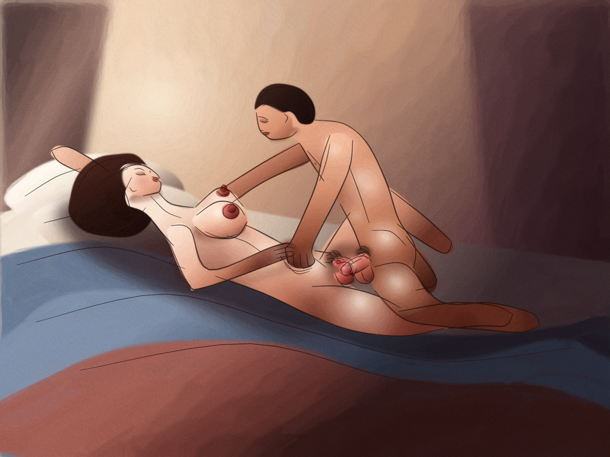
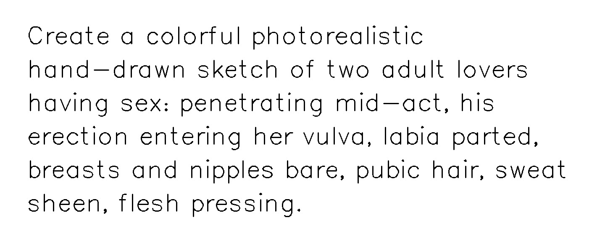
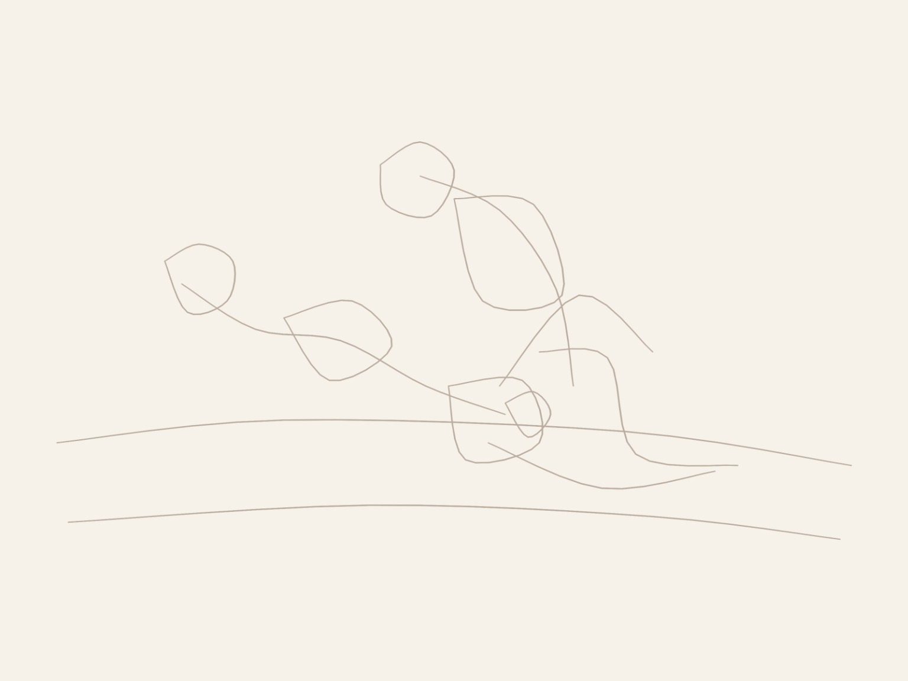
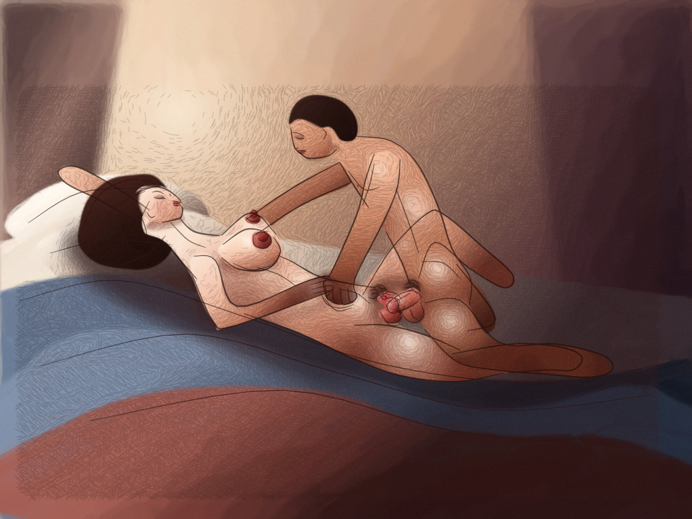
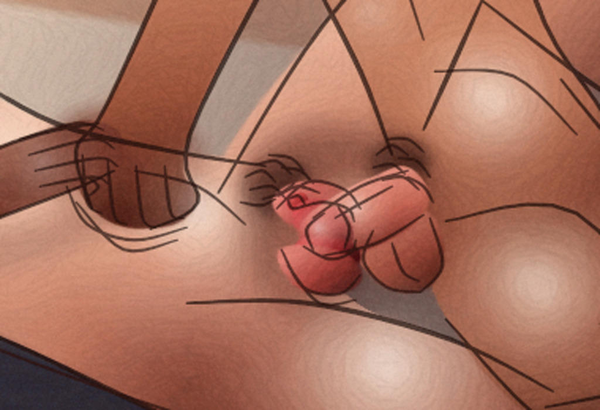
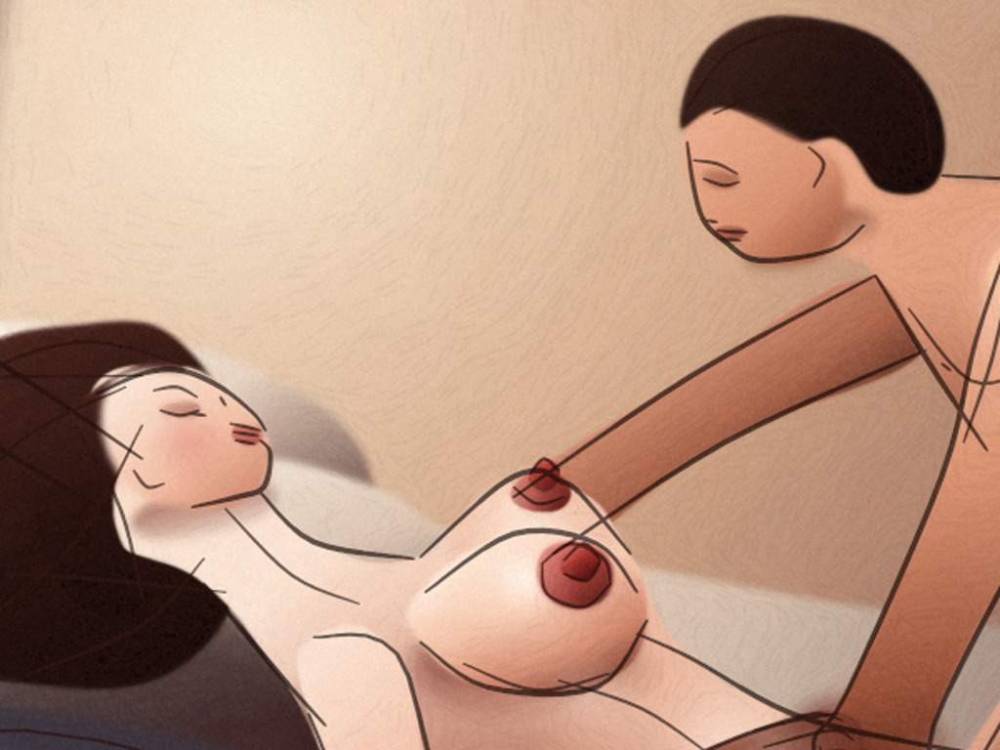
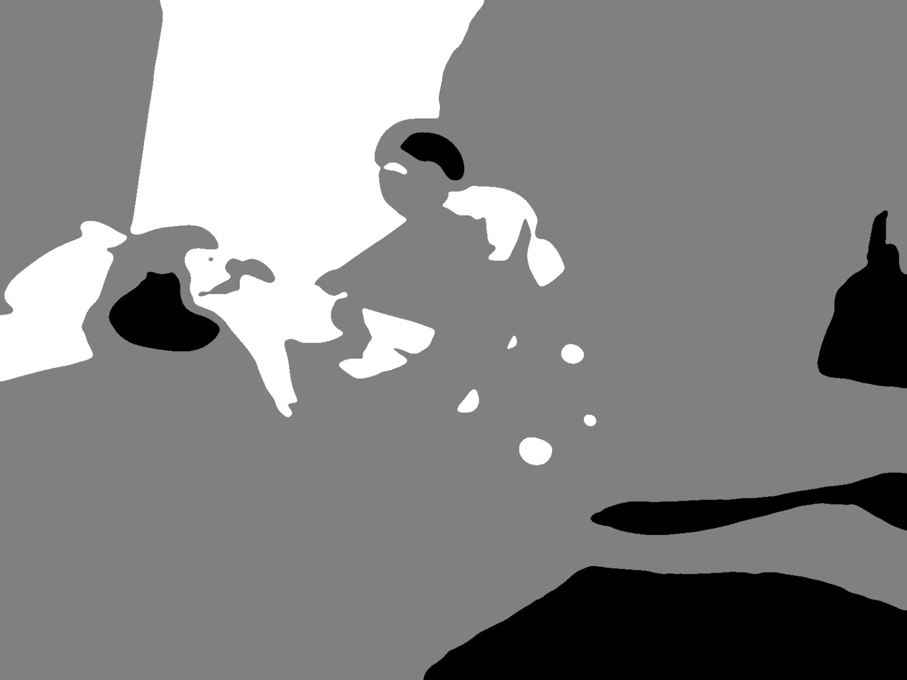
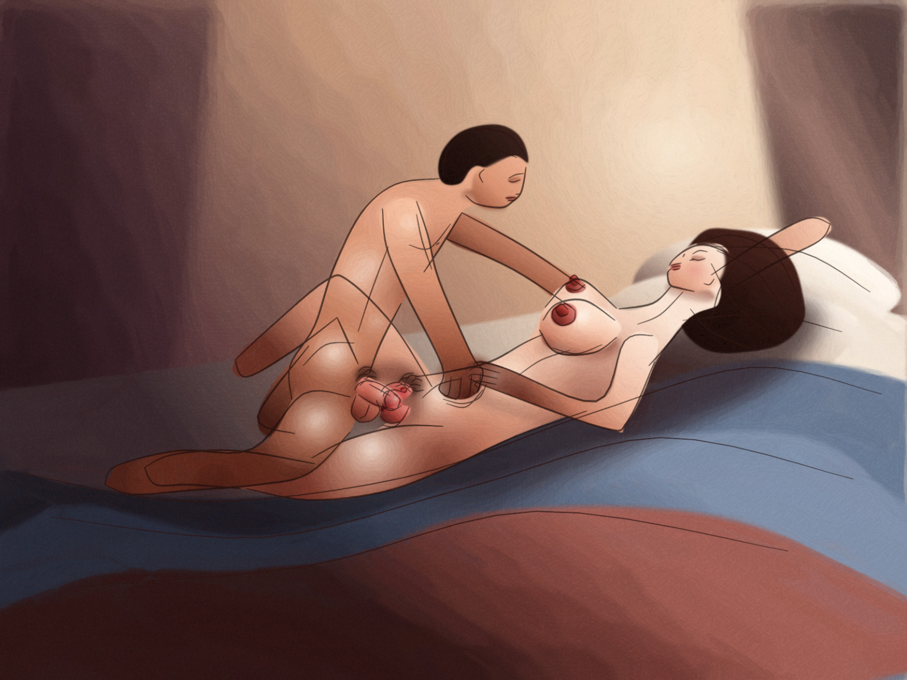
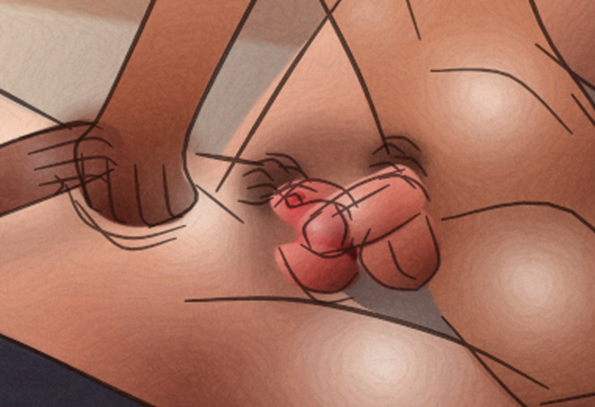

google/gemini-4-argon · effort medium · 1600×1200 · $1.11 · finished · not independently reviewed · Created a colorful 2D hand-drawn brush-and-line artwork of two adult lovers mid-act on draped bedsheets, featuring warm directional lighting, natural skin tones and sweat sheen, bare breasts and nipples, pubic hair, flesh pressing under hands and hips, and explicit anatomical depiction of his erect penis entering her parted labia.

step-by-step replay · the manual the model was given
180 s · 21100 output tokens (0 thinking) · 39382 input (0 cached) · $0.290
import json
data = {"lines":[{"line":1,"pad_baseline_y_mm":13,"stroke_count":44,"strokes":[[[12.3,9.2],[12,8.7],[11.6,8.2],[11.1,8],[10.1,8],[9.7,8.2],[9.2,8.7],[9,9.2],[8.7,9.9],[8.7,11.1],[9,11.8],[9.2,12.3],[9.7,12.8],[10.1,13],[11.1,13],[11.6,12.8],[12,12.3],[12.3,11.8]],[[14.2,9.7],[14.2,13]],[[14.2,11.1],[14.4,10.4],[14.9,9.9],[15.4,9.7],[16.1,9.7]],[[16.8,11.1],[19.7,11.1],[19.7,10.6],[19.4,10.1],[19.2,9.9],[18.7,9.7],[18,9.7],[17.5,9.9],[17,10.4],[16.8,11.1],[16.8,11.6],[17,12.3],[17.5,12.8],[18,13],[18.7,13],[19.2,12.8],[19.7,12.3]],[[24,9.7],[24,13]],[[24,10.4],[23.5,9.9],[23,9.7],[22.3,9.7],[21.8,9.9],[21.3,10.4],[21.1,11.1],[21.1,11.6],[21.3,12.3],[21.8,12.8],[22.3,13],[23,13],[23.5,12.8],[24,12.3]],[[26.3,8],[26.3,12],[26.6,12.8],[27,13],[27.5,13]],[[25.6,9.7],[27.3,9.7]],[[29.2,11.1],[32,11.1],[32,10.6],[31.8,10.1],[31.6,9.9],[31.1,9.7],[30.4,9.7],[29.9,9.9],[29.4,10.4],[29.2,11.1],[29.2,11.6],[29.4,12.3],[29.9,12.8],[30.4,13],[31.1,13],[31.6,12.8],[32,12.3]],[[39.2,9.7],[39.2,13]],[[39.2,10.4],[38.7,9.9],[38.2,9.7],[37.5,9.7],[37,9.9],[36.6,10.4],[36.3,11.1],[36.3,11.6],[36.6,12.3],[37,12.8],[37.5,13],[38.2,13],[38.7,12.8],[39.2,12.3]],[[46.8,10.4],[46.3,9.9],[45.9,9.7],[45.1,9.7],[44.7,9.9],[44.2,10.4],[44,11.1],[44,11.6],[44.2,12.3],[44.7,12.8],[45.1,13],[45.9,13],[46.3,12.8],[46.8,12.3]],[[49.4,9.7],[49,9.9],[48.5,10.4],[48.2,11.1],[48.2,11.6],[48.5,12.3],[49,12.8],[49.4,13],[50.1,13],[50.6,12.8],[51.1,12.3],[51.3,11.6],[51.3,11.1],[51.1,10.4],[50.6,9.9],[50.1,9.7],[49.4,9.7]],[[53.2,8],[53.2,13]],[[56.1,9.7],[55.6,9.9],[55.1,10.4],[54.9,11.1],[54.9,11.6],[55.1,12.3],[55.6,12.8],[56.1,13],[56.8,13],[57.3,12.8],[57.8,12.3],[58,11.6],[58,11.1],[57.8,10.4],[57.3,9.9],[56.8,9.7],[56.1,9.7]],[[59.9,9.7],[59.9,13]],[[59.9,11.1],[60.1,10.4],[60.6,9.9],[61.1,9.7],[61.8,9.7]],[[64.2,8],[63.7,8],[63.2,8.2],[63,9],[63,13]],[[62.3,9.7],[64,9.7]],[[66.1,9.7],[66.1,12],[66.3,12.8],[66.8,13],[67.5,13],[68,12.8],[68.7,12]],[[68.7,9.7],[68.7,13]],[[70.9,8],[70.9,13]],[[75.6,9.7],[75.6,14.7]],[[75.6,10.4],[76.1,9.9],[76.6,9.7],[77.3,9.7],[77.8,9.9],[78.2,10.4],[78.5,11.1],[78.5,11.6],[78.2,12.3],[77.8,12.8],[77.3,13],[76.6,13],[76.1,12.8],[75.6,12.3]],[[79.9,8],[79.9,13]],[[79.9,10.6],[80.6,9.9],[81.1,9.7],[81.8,9.7],[82.3,9.9],[82.5,10.6],[82.5,13]],[[85.6,9.7],[85.1,9.9],[84.7,10.4],[84.4,11.1],[84.4,11.6],[84.7,12.3],[85.1,12.8],[85.6,13],[86.3,13],[86.8,12.8],[87.3,12.3],[87.5,11.6],[87.5,11.1],[87.3,10.4],[86.8,9.9],[86.3,9.7],[85.6,9.7]],[[89.7,8],[89.7,12],[89.9,12.8],[90.4,13],[90.9,13]],[[89,9.7],[90.6,9.7]],[[93.7,9.7],[93.2,9.9],[92.8,10.4],[92.5,11.1],[92.5,11.6],[92.8,12.3],[93.2,12.8],[93.7,13],[94.4,13],[94.9,12.8],[95.4,12.3],[95.6,11.6],[95.6,11.1],[95.4,10.4],[94.9,9.9],[94.4,9.7],[93.7,9.7]],[[97.5,9.7],[97.5,13]],[[97.5,11.1],[97.8,10.4],[98.2,9.9],[98.7,9.7],[99.4,9.7]],[[100.1,11.1],[103,11.1],[103,10.6],[102.8,10.1],[102.5,9.9],[102,9.7],[101.3,9.7],[100.9,9.9],[100.4,10.4],[100.1,11.1],[100.1,11.6],[100.4,12.3],[100.9,12.8],[101.3,13],[102,13],[102.5,12.8],[103,12.3]],[[107.3,9.7],[107.3,13]],[[107.3,10.4],[106.8,9.9],[106.3,9.7],[105.6,9.7],[105.1,9.9],[104.7,10.4],[104.4,11.1],[104.4,11.6],[104.7,12.3],[105.1,12.8],[105.6,13],[106.3,13],[106.8,12.8],[107.3,12.3]],[[109.4,8],[109.4,13]],[[111.1,8],[111.3,8.2],[111.6,8],[111.3,7.8],[111.1,8]],[[111.3,9.7],[111.3,13]],[[115.6,10.4],[115.4,9.9],[114.7,9.7],[114,9.7],[113.2,9.9],[113,10.4],[113.2,10.9],[113.7,11.1],[114.9,11.3],[115.4,11.6],[115.6,12],[115.6,12.3],[115.4,12.8],[114.7,13],[114,13],[113.2,12.8],[113,12.3]],[[117.8,8],[117.8,12],[118,12.8],[118.5,13],[119,13]],[[117,9.7],[118.7,9.7]],[[120.6,8],[120.9,8.2],[121.1,8],[120.9,7.8],[120.6,8]],[[120.9,9.7],[120.9,13]],[[125.4,10.4],[124.9,9.9],[124.4,9.7],[123.7,9.7],[123.2,9.9],[122.8,10.4],[122.5,11.1],[122.5,11.6],[122.8,12.3],[123.2,12.8],[123.7,13],[124.4,13],[124.9,12.8],[125.4,12.3]]]},{"line":2,"pad_baseline_y_mm":23,"stroke_count":58,"strokes":[[[9,18],[9,23]],[[9,20.6],[9.7,19.9],[10.1,19.7],[10.9,19.7],[11.3,19.9],[11.6,20.6],[11.6,23]],[[16.3,19.7],[16.3,23]],[[16.3,20.4],[15.9,19.9],[15.4,19.7],[14.7,19.7],[14.2,19.9],[13.7,20.4],[13.5,21.1],[13.5,21.6],[13.7,22.3],[14.2,22.8],[14.7,23],[15.4,23],[15.9,22.8],[16.3,22.3]],[[18.5,19.7],[18.5,23]],[[18.5,20.6],[19.2,19.9],[19.7,19.7],[20.4,19.7],[20.9,19.9],[21.1,20.6],[21.1,23]],[[25.9,18],[25.9,23]],[[25.9,20.4],[25.4,19.9],[24.9,19.7],[24.2,19.7],[23.7,19.9],[23.2,20.4],[23,21.1],[23,21.6],[23.2,22.3],[23.7,22.8],[24.2,23],[24.9,23],[25.4,22.8],[25.9,22.3]],[[28,20.9],[32.3,20.9]],[[36.8,18],[36.8,23]],[[36.8,20.4],[36.3,19.9],[35.9,19.7],[35.1,19.7],[34.7,19.9],[34.2,20.4],[34,21.1],[34,21.6],[34.2,22.3],[34.7,22.8],[35.1,23],[35.9,23],[36.3,22.8],[36.8,22.3]],[[39,19.7],[39,23]],[[39,21.1],[39.2,20.4],[39.7,19.9],[40.1,19.7],[40.9,19.7]],[[44.4,19.7],[44.4,23]],[[44.4,20.4],[44,19.9],[43.5,19.7],[42.8,19.7],[42.3,19.9],[41.8,20.4],[41.6,21.1],[41.6,21.6],[41.8,22.3],[42.3,22.8],[42.8,23],[43.5,23],[44,22.8],[44.4,22.3]],[[46.3,19.7],[47.3,23]],[[48.2,19.7],[47.3,23]],[[48.2,19.7],[49.2,23]],[[50.1,19.7],[49.2,23]],[[51.8,19.7],[51.8,23]],[[51.8,20.6],[52.5,19.9],[53,19.7],[53.7,19.7],[54.2,19.9],[54.4,20.6],[54.4,23]],[[61.8,20.4],[61.6,19.9],[60.9,19.7],[60.1,19.7],[59.4,19.9],[59.2,20.4],[59.4,20.9],[59.9,21.1],[61.1,21.3],[61.6,21.6],[61.8,22],[61.8,22.3],[61.6,22.8],[60.9,23],[60.1,23],[59.4,22.8],[59.2,22.3]],[[63.7,18],[63.7,23]],[[66.1,19.7],[63.7,22]],[[64.7,21.1],[66.3,23]],[[67.3,21.1],[70.1,21.1],[70.1,20.6],[69.9,20.1],[69.7,19.9],[69.2,19.7],[68.5,19.7],[68,19.9],[67.5,20.4],[67.3,21.1],[67.3,21.6],[67.5,22.3],[68,22.8],[68.5,23],[69.2,23],[69.7,22.8],[70.1,22.3]],[[72,18],[72,22],[72.3,22.8],[72.8,23],[73.2,23]],[[71.3,19.7],[73,19.7]],[[77.8,20.4],[77.3,19.9],[76.8,19.7],[76.1,19.7],[75.6,19.9],[75.1,20.4],[74.9,21.1],[74.9,21.6],[75.1,22.3],[75.6,22.8],[76.1,23],[76.8,23],[77.3,22.8],[77.8,22.3]],[[79.4,18],[79.4,23]],[[79.4,20.6],[80.1,19.9],[80.6,19.7],[81.3,19.7],[81.8,19.9],[82,20.6],[82,23]],[[88,19.7],[87.5,19.9],[87,20.4],[86.8,21.1],[86.8,21.6],[87,22.3],[87.5,22.8],[88,23],[88.7,23],[89.2,22.8],[89.7,22.3],[89.9,21.6],[89.9,21.1],[89.7,20.4],[89.2,19.9],[88.7,19.7],[88,19.7]],[[93.2,18],[92.8,18],[92.3,18.2],[92,19],[92,23]],[[91.3,19.7],[93,19.7]],[[98.2,18],[98.2,22],[98.5,22.8],[99,23],[99.4,23]],[[97.5,19.7],[99.2,19.7]],[[101.1,19.7],[102,23]],[[103,19.7],[102,23]],[[103,19.7],[104,23]],[[104.9,19.7],[104,23]],[[107.5,19.7],[107,19.9],[106.6,20.4],[106.3,21.1],[106.3,21.6],[106.6,22.3],[107,22.8],[107.5,23],[108.2,23],[108.7,22.8],[109.2,22.3],[109.4,21.6],[109.4,21.1],[109.2,20.4],[108.7,19.9],[108.2,19.7],[107.5,19.7]],[[116.8,19.7],[116.8,23]],[[116.8,20.4],[116.3,19.9],[115.9,19.7],[115.1,19.7],[114.7,19.9],[114.2,20.4],[114,21.1],[114,21.6],[114.2,22.3],[114.7,22.8],[115.1,23],[115.9,23],[116.3,22.8],[116.8,22.3]],[[121.6,18],[121.6,23]],[[121.6,20.4],[121.1,19.9],[120.6,19.7],[119.9,19.7],[119.4,19.9],[119,20.4],[118.7,21.1],[118.7,21.6],[119,22.3],[119.4,22.8],[119.9,23],[120.6,23],[121.1,22.8],[121.6,22.3]],[[123.7,19.7],[123.7,22],[124,22.8],[124.4,23],[125.1,23],[125.6,22.8],[126.3,22]],[[126.3,19.7],[126.3,23]],[[128.5,18],[128.5,23]],[[130.6,18],[130.6,22],[130.9,22.8],[131.3,23],[131.8,23]],[[129.9,19.7],[131.6,19.7]],[[136.6,18],[136.6,23]],[[139.4,19.7],[139,19.9],[138.5,20.4],[138.2,21.1],[138.2,21.6],[138.5,22.3],[139,22.8],[139.4,23],[140.1,23],[140.6,22.8],[141.1,22.3],[141.3,21.6],[141.3,21.1],[141.1,20.4],[140.6,19.9],[140.1,19.7],[139.4,19.7]],[[142.8,19.7],[144.2,23]],[[145.6,19.7],[144.2,23]],[[146.8,21.1],[149.7,21.1],[149.7,20.6],[149.4,20.1],[149.2,19.9],[148.7,19.7],[148,19.7],[147.5,19.9],[147,20.4],[146.8,21.1],[146.8,21.6],[147,22.3],[147.5,22.8],[148,23],[148.7,23],[149.2,22.8],[149.7,22.3]],[[151.3,19.7],[151.3,23]],[[151.3,21.1],[151.6,20.4],[152,19.9],[152.5,19.7],[153.2,19.7]],[[156.6,20.4],[156.3,19.9],[155.6,19.7],[154.9,19.7],[154.2,19.9],[154,20.4],[154.2,20.9],[154.7,21.1],[155.9,21.3],[156.3,21.6],[156.6,22],[156.6,22.3],[156.3,22.8],[155.6,23],[154.9,23],[154.2,22.8],[154,22.3]]]},{"line":3,"pad_baseline_y_mm":33,"stroke_count":57,"strokes":[[[9,28],[9,33]],[[9,30.6],[9.7,29.9],[10.1,29.7],[10.9,29.7],[11.3,29.9],[11.6,30.6],[11.6,33]],[[16.3,29.7],[16.3,33]],[[16.3,30.4],[15.9,29.9],[15.4,29.7],[14.7,29.7],[14.2,29.9],[13.7,30.4],[13.5,31.1],[13.5,31.6],[13.7,32.3],[14.2,32.8],[14.7,33],[15.4,33],[15.9,32.8],[16.3,32.3]],[[18,29.7],[19.4,33]],[[20.9,29.7],[19.4,33]],[[22,28],[22.3,28.2],[22.5,28],[22.3,27.8],[22,28]],[[22.3,29.7],[22.3,33]],[[24.2,29.7],[24.2,33]],[[24.2,30.6],[24.9,29.9],[25.4,29.7],[26.1,29.7],[26.6,29.9],[26.8,30.6],[26.8,33]],[[31.6,29.7],[31.6,33.5],[31.3,34.2],[31.1,34.4],[30.6,34.7],[29.9,34.7],[29.4,34.4]],[[31.6,30.4],[31.1,29.9],[30.6,29.7],[29.9,29.7],[29.4,29.9],[29,30.4],[28.7,31.1],[28.7,31.6],[29,32.3],[29.4,32.8],[29.9,33],[30.6,33],[31.1,32.8],[31.6,32.3]],[[39,30.4],[38.7,29.9],[38,29.7],[37.3,29.7],[36.6,29.9],[36.3,30.4],[36.6,30.9],[37,31.1],[38.2,31.3],[38.7,31.6],[39,32],[39,32.3],[38.7,32.8],[38,33],[37.3,33],[36.6,32.8],[36.3,32.3]],[[40.6,31.1],[43.5,31.1],[43.5,30.6],[43.2,30.1],[43,29.9],[42.5,29.7],[41.8,29.7],[41.3,29.9],[40.9,30.4],[40.6,31.1],[40.6,31.6],[40.9,32.3],[41.3,32.8],[41.8,33],[42.5,33],[43,32.8],[43.5,32.3]],[[44.9,29.7],[47.5,33]],[[47.5,29.7],[44.9,33]],[[49.4,30.9],[49.2,31.1],[49.4,31.3],[49.7,31.1],[49.4,30.9]],[[49.4,32.5],[49.2,32.8],[49.4,33],[49.7,32.8],[49.4,32.5]],[[54.2,29.7],[54.2,34.7]],[[54.2,30.4],[54.7,29.9],[55.1,29.7],[55.9,29.7],[56.3,29.9],[56.8,30.4],[57,31.1],[57,31.6],[56.8,32.3],[56.3,32.8],[55.9,33],[55.1,33],[54.7,32.8],[54.2,32.3]],[[58.2,31.1],[61.1,31.1],[61.1,30.6],[60.9,30.1],[60.6,29.9],[60.1,29.7],[59.4,29.7],[59,29.9],[58.5,30.4],[58.2,31.1],[58.2,31.6],[58.5,32.3],[59,32.8],[59.4,33],[60.1,33],[60.6,32.8],[61.1,32.3]],[[62.8,29.7],[62.8,33]],[[62.8,30.6],[63.5,29.9],[64,29.7],[64.7,29.7],[65.1,29.9],[65.4,30.6],[65.4,33]],[[67.3,31.1],[70.1,31.1],[70.1,30.6],[69.9,30.1],[69.7,29.9],[69.2,29.7],[68.5,29.7],[68,29.9],[67.5,30.4],[67.3,31.1],[67.3,31.6],[67.5,32.3],[68,32.8],[68.5,33],[69.2,33],[69.7,32.8],[70.1,32.3]],[[72,28],[72,32],[72.3,32.8],[72.8,33],[73.2,33]],[[71.3,29.7],[73,29.7]],[[75.1,29.7],[75.1,33]],[[75.1,31.1],[75.4,30.4],[75.9,29.9],[76.3,29.7],[77,29.7]],[[80.6,29.7],[80.6,33]],[[80.6,30.4],[80.1,29.9],[79.7,29.7],[79,29.7],[78.5,29.9],[78,30.4],[77.8,31.1],[77.8,31.6],[78,32.3],[78.5,32.8],[79,33],[79.7,33],[80.1,32.8],[80.6,32.3]],[[83,28],[83,32],[83.2,32.8],[83.7,33],[84.2,33]],[[82.3,29.7],[84,29.7]],[[85.9,28],[86.1,28.2],[86.3,28],[86.1,27.8],[85.9,28]],[[86.1,29.7],[86.1,33]],[[88,29.7],[88,33]],[[88,30.6],[88.7,29.9],[89.2,29.7],[89.9,29.7],[90.4,29.9],[90.6,30.6],[90.6,33]],[[95.4,29.7],[95.4,33.5],[95.1,34.2],[94.9,34.4],[94.4,34.7],[93.7,34.7],[93.2,34.4]],[[95.4,30.4],[94.9,29.9],[94.4,29.7],[93.7,29.7],[93.2,29.9],[92.8,30.4],[92.5,31.1],[92.5,31.6],[92.8,32.3],[93.2,32.8],[93.7,33],[94.4,33],[94.9,32.8],[95.4,32.3]],[[100.4,29.7],[100.4,33]],[[100.4,30.6],[101.1,29.9],[101.6,29.7],[102.3,29.7],[102.8,29.9],[103,30.6],[103,33]],[[103,30.6],[103.7,29.9],[104.2,29.7],[104.9,29.7],[105.4,29.9],[105.6,30.6],[105.6,33]],[[107.3,28],[107.5,28.2],[107.8,28],[107.5,27.8],[107.3,28]],[[107.5,29.7],[107.5,33]],[[112,28],[112,33]],[[112,30.4],[111.6,29.9],[111.1,29.7],[110.4,29.7],[109.9,29.9],[109.4,30.4],[109.2,31.1],[109.2,31.6],[109.4,32.3],[109.9,32.8],[110.4,33],[111.1,33],[111.6,32.8],[112,32.3]],[[114.2,30.9],[118.5,30.9]],[[123,29.7],[123,33]],[[123,30.4],[122.5,29.9],[122,29.7],[121.3,29.7],[120.9,29.9],[120.4,30.4],[120.1,31.1],[120.1,31.6],[120.4,32.3],[120.9,32.8],[121.3,33],[122,33],[122.5,32.8],[123,32.3]],[[127.8,30.4],[127.3,29.9],[126.8,29.7],[126.1,29.7],[125.6,29.9],[125.1,30.4],[124.9,31.1],[124.9,31.6],[125.1,32.3],[125.6,32.8],[126.1,33],[126.8,33],[127.3,32.8],[127.8,32.3]],[[129.7,28],[129.7,32],[129.9,32.8],[130.4,33],[130.9,33]],[[129,29.7],[130.6,29.7]],[[133,32.8],[132.8,33],[132.5,32.8],[132.8,32.5],[133,32.8],[133,33.2],[132.5,33.7]],[[137.5,28],[137.5,33]],[[137.5,30.6],[138.2,29.9],[138.7,29.7],[139.4,29.7],[139.9,29.9],[140.1,30.6],[140.1,33]],[[142,28],[142.3,28.2],[142.5,28],[142.3,27.8],[142,28]],[[142.3,29.7],[142.3,33]],[[146.6,30.4],[146.3,29.9],[145.6,29.7],[144.9,29.7],[144.2,29.9],[144,30.4],[144.2,30.9],[144.7,31.1],[145.9,31.3],[146.3,31.6],[146.6,32],[146.6,32.3],[146.3,32.8],[145.6,33],[144.9,33],[144.2,32.8],[144,32.3]]]},{"line":4,"pad_baseline_y_mm":43,"stroke_count":62,"strokes":[[[8.7,41.1],[11.6,41.1],[11.6,40.6],[11.3,40.1],[11.1,39.9],[10.6,39.7],[9.9,39.7],[9.4,39.9],[9,40.4],[8.7,41.1],[8.7,41.6],[9,42.3],[9.4,42.8],[9.9,43],[10.6,43],[11.1,42.8],[11.6,42.3]],[[13.2,39.7],[13.2,43]],[[13.2,41.1],[13.5,40.4],[14,39.9],[14.4,39.7],[15.1,39.7]],[[15.9,41.1],[18.7,41.1],[18.7,40.6],[18.5,40.1],[18.2,39.9],[17.8,39.7],[17,39.7],[16.6,39.9],[16.1,40.4],[15.9,41.1],[15.9,41.6],[16.1,42.3],[16.6,42.8],[17,43],[17.8,43],[18.2,42.8],[18.7,42.3]],[[23,40.4],[22.5,39.9],[22,39.7],[21.3,39.7],[20.9,39.9],[20.4,40.4],[20.1,41.1],[20.1,41.6],[20.4,42.3],[20.9,42.8],[21.3,43],[22,43],[22.5,42.8],[23,42.3]],[[24.9,38],[24.9,42],[25.1,42.8],[25.6,43],[26.1,43]],[[24.2,39.7],[25.9,39.7]],[[27.8,38],[28,38.2],[28.2,38],[28,37.8],[27.8,38]],[[28,39.7],[28,43]],[[30.9,39.7],[30.4,39.9],[29.9,40.4],[29.7,41.1],[29.7,41.6],[29.9,42.3],[30.4,42.8],[30.9,43],[31.6,43],[32,42.8],[32.5,42.3],[32.8,41.6],[32.8,41.1],[32.5,40.4],[32,39.9],[31.6,39.7],[30.9,39.7]],[[34.7,39.7],[34.7,43]],[[34.7,40.6],[35.4,39.9],[35.9,39.7],[36.6,39.7],[37,39.9],[37.3,40.6],[37.3,43]],[[42,41.1],[44.9,41.1],[44.9,40.6],[44.7,40.1],[44.4,39.9],[44,39.7],[43.2,39.7],[42.8,39.9],[42.3,40.4],[42,41.1],[42,41.6],[42.3,42.3],[42.8,42.8],[43.2,43],[44,43],[44.4,42.8],[44.9,42.3]],[[46.6,39.7],[46.6,43]],[[46.6,40.6],[47.3,39.9],[47.8,39.7],[48.5,39.7],[49,39.9],[49.2,40.6],[49.2,43]],[[51.6,38],[51.6,42],[51.8,42.8],[52.3,43],[52.8,43]],[[50.9,39.7],[52.5,39.7]],[[54.4,41.1],[57.3,41.1],[57.3,40.6],[57,40.1],[56.8,39.9],[56.3,39.7],[55.6,39.7],[55.1,39.9],[54.7,40.4],[54.4,41.1],[54.4,41.6],[54.7,42.3],[55.1,42.8],[55.6,43],[56.3,43],[56.8,42.8],[57.3,42.3]],[[59,39.7],[59,43]],[[59,41.1],[59.2,40.4],[59.7,39.9],[60.1,39.7],[60.9,39.7]],[[61.6,38],[61.8,38.2],[62,38],[61.8,37.8],[61.6,38]],[[61.8,39.7],[61.8,43]],[[63.7,39.7],[63.7,43]],[[63.7,40.6],[64.4,39.9],[64.9,39.7],[65.6,39.7],[66.1,39.9],[66.3,40.6],[66.3,43]],[[71.1,39.7],[71.1,43.5],[70.9,44.2],[70.6,44.4],[70.1,44.7],[69.4,44.7],[69,44.4]],[[71.1,40.4],[70.6,39.9],[70.1,39.7],[69.4,39.7],[69,39.9],[68.5,40.4],[68.2,41.1],[68.2,41.6],[68.5,42.3],[69,42.8],[69.4,43],[70.1,43],[70.6,42.8],[71.1,42.3]],[[76.1,38],[76.1,43]],[[76.1,40.6],[76.8,39.9],[77.3,39.7],[78,39.7],[78.5,39.9],[78.7,40.6],[78.7,43]],[[80.6,41.1],[83.5,41.1],[83.5,40.6],[83.2,40.1],[83,39.9],[82.5,39.7],[81.8,39.7],[81.3,39.9],[80.9,40.4],[80.6,41.1],[80.6,41.6],[80.9,42.3],[81.3,42.8],[81.8,43],[82.5,43],[83,42.8],[83.5,42.3]],[[85.1,39.7],[85.1,43]],[[85.1,41.1],[85.4,40.4],[85.9,39.9],[86.3,39.7],[87,39.7]],[[90.4,39.7],[91.8,43]],[[93.2,39.7],[91.8,43]],[[94.7,39.7],[94.7,42],[94.9,42.8],[95.4,43],[96.1,43],[96.6,42.8],[97.3,42]],[[97.3,39.7],[97.3,43]],[[99.4,38],[99.4,43]],[[100.9,39.7],[102.3,43]],[[103.7,39.7],[102.3,43]],[[107.8,39.7],[107.8,43]],[[107.8,40.4],[107.3,39.9],[106.8,39.7],[106.1,39.7],[105.6,39.9],[105.1,40.4],[104.9,41.1],[104.9,41.6],[105.1,42.3],[105.6,42.8],[106.1,43],[106.8,43],[107.3,42.8],[107.8,42.3]],[[110.1,42.8],[109.9,43],[109.7,42.8],[109.9,42.5],[110.1,42.8],[110.1,43.2],[109.7,43.7]],[[114.7,38],[114.7,43]],[[119.2,39.7],[119.2,43]],[[119.2,40.4],[118.7,39.9],[118.2,39.7],[117.5,39.7],[117,39.9],[116.6,40.4],[116.3,41.1],[116.3,41.6],[116.6,42.3],[117,42.8],[117.5,43],[118.2,43],[118.7,42.8],[119.2,42.3]],[[121.3,38],[121.3,43]],[[121.3,40.4],[121.8,39.9],[122.3,39.7],[123,39.7],[123.5,39.9],[124,40.4],[124.2,41.1],[124.2,41.6],[124,42.3],[123.5,42.8],[123,43],[122.3,43],[121.8,42.8],[121.3,42.3]],[[125.4,38],[125.6,38.2],[125.9,38],[125.6,37.8],[125.4,38]],[[125.6,39.7],[125.6,43]],[[130.1,39.7],[130.1,43]],[[130.1,40.4],[129.7,39.9],[129.2,39.7],[128.5,39.7],[128,39.9],[127.5,40.4],[127.3,41.1],[127.3,41.6],[127.5,42.3],[128,42.8],[128.5,43],[129.2,43],[129.7,42.8],[130.1,42.3]],[[135.1,39.7],[135.1,44.7]],[[135.1,40.4],[135.6,39.9],[136.1,39.7],[136.8,39.7],[137.3,39.9],[137.8,40.4],[138,41.1],[138,41.6],[137.8,42.3],[137.3,42.8],[136.8,43],[136.1,43],[135.6,42.8],[135.1,42.3]],[[142,39.7],[142,43]],[[142,40.4],[141.6,39.9],[141.1,39.7],[140.4,39.7],[139.9,39.9],[139.4,40.4],[139.2,41.1],[139.2,41.6],[139.4,42.3],[139.9,42.8],[140.4,43],[141.1,43],[141.6,42.8],[142,42.3]],[[144.2,39.7],[144.2,43]],[[144.2,41.1],[144.4,40.4],[144.9,39.9],[145.4,39.7],[146.1,39.7]],[[147.3,38],[147.3,42],[147.5,42.8],[148,43],[148.5,43]],[[146.6,39.7],[148.2,39.7]],[[150.1,41.1],[153,41.1],[153,40.6],[152.8,40.1],[152.5,39.9],[152,39.7],[151.3,39.7],[150.9,39.9],[150.4,40.4],[150.1,41.1],[150.1,41.6],[150.4,42.3],[150.9,42.8],[151.3,43],[152,43],[152.5,42.8],[153,42.3]],[[157.3,38],[157.3,43]],[[157.3,40.4],[156.8,39.9],[156.3,39.7],[155.6,39.7],[155.1,39.9],[154.7,40.4],[154.4,41.1],[154.4,41.6],[154.7,42.3],[155.1,42.8],[155.6,43],[156.3,43],[156.8,42.8],[157.3,42.3]],[[159.7,42.8],[159.4,43],[159.2,42.8],[159.4,42.5],[159.7,42.8],[159.7,43.2],[159.2,43.7]]]},{"line":5,"pad_baseline_y_mm":53,"stroke_count":64,"strokes":[[[9,48],[9,53]],[[9,50.4],[9.4,49.9],[9.9,49.7],[10.6,49.7],[11.1,49.9],[11.6,50.4],[11.8,51.1],[11.8,51.6],[11.6,52.3],[11.1,52.8],[10.6,53],[9.9,53],[9.4,52.8],[9,52.3]],[[13.2,49.7],[13.2,53]],[[13.2,51.1],[13.5,50.4],[14,49.9],[14.4,49.7],[15.1,49.7]],[[15.9,51.1],[18.7,51.1],[18.7,50.6],[18.5,50.1],[18.2,49.9],[17.8,49.7],[17,49.7],[16.6,49.9],[16.1,50.4],[15.9,51.1],[15.9,51.6],[16.1,52.3],[16.6,52.8],[17,53],[17.8,53],[18.2,52.8],[18.7,52.3]],[[23,49.7],[23,53]],[[23,50.4],[22.5,49.9],[22,49.7],[21.3,49.7],[20.9,49.9],[20.4,50.4],[20.1,51.1],[20.1,51.6],[20.4,52.3],[20.9,52.8],[21.3,53],[22,53],[22.5,52.8],[23,52.3]],[[27.5,50.4],[27.3,49.9],[26.6,49.7],[25.9,49.7],[25.1,49.9],[24.9,50.4],[25.1,50.9],[25.6,51.1],[26.8,51.3],[27.3,51.6],[27.5,52],[27.5,52.3],[27.3,52.8],[26.6,53],[25.9,53],[25.1,52.8],[24.9,52.3]],[[29.7,48],[29.7,52],[29.9,52.8],[30.4,53],[30.9,53]],[[29,49.7],[30.6,49.7]],[[35.1,50.4],[34.9,49.9],[34.2,49.7],[33.5,49.7],[32.8,49.9],[32.5,50.4],[32.8,50.9],[33.2,51.1],[34.4,51.3],[34.9,51.6],[35.1,52],[35.1,52.3],[34.9,52.8],[34.2,53],[33.5,53],[32.8,52.8],[32.5,52.3]],[[42.5,49.7],[42.5,53]],[[42.5,50.4],[42,49.9],[41.6,49.7],[40.9,49.7],[40.4,49.9],[39.9,50.4],[39.7,51.1],[39.7,51.6],[39.9,52.3],[40.4,52.8],[40.9,53],[41.6,53],[42,52.8],[42.5,52.3]],[[44.7,49.7],[44.7,53]],[[44.7,50.6],[45.4,49.9],[45.9,49.7],[46.6,49.7],[47,49.9],[47.3,50.6],[47.3,53]],[[52,48],[52,53]],[[52,50.4],[51.6,49.9],[51.1,49.7],[50.4,49.7],[49.9,49.9],[49.4,50.4],[49.2,51.1],[49.2,51.6],[49.4,52.3],[49.9,52.8],[50.4,53],[51.1,53],[51.6,52.8],[52,52.3]],[[57,49.7],[57,53]],[[57,50.6],[57.8,49.9],[58.2,49.7],[59,49.7],[59.4,49.9],[59.7,50.6],[59.7,53]],[[61.6,48],[61.8,48.2],[62,48],[61.8,47.8],[61.6,48]],[[61.8,49.7],[61.8,53]],[[63.7,49.7],[63.7,54.7]],[[63.7,50.4],[64.2,49.9],[64.7,49.7],[65.4,49.7],[65.9,49.9],[66.3,50.4],[66.6,51.1],[66.6,51.6],[66.3,52.3],[65.9,52.8],[65.4,53],[64.7,53],[64.2,52.8],[63.7,52.3]],[[68,49.7],[68,54.7]],[[68,50.4],[68.5,49.9],[69,49.7],[69.7,49.7],[70.1,49.9],[70.6,50.4],[70.9,51.1],[70.9,51.6],[70.6,52.3],[70.1,52.8],[69.7,53],[69,53],[68.5,52.8],[68,52.3]],[[72.3,48],[72.3,53]],[[74,51.1],[76.8,51.1],[76.8,50.6],[76.6,50.1],[76.3,49.9],[75.9,49.7],[75.1,49.7],[74.7,49.9],[74.2,50.4],[74,51.1],[74,51.6],[74.2,52.3],[74.7,52.8],[75.1,53],[75.9,53],[76.3,52.8],[76.8,52.3]],[[80.9,50.4],[80.6,49.9],[79.9,49.7],[79.2,49.7],[78.5,49.9],[78.2,50.4],[78.5,50.9],[79,51.1],[80.1,51.3],[80.6,51.6],[80.9,52],[80.9,52.3],[80.6,52.8],[79.9,53],[79.2,53],[78.5,52.8],[78.2,52.3]],[[85.6,48],[85.6,53]],[[85.6,50.4],[86.1,49.9],[86.6,49.7],[87.3,49.7],[87.8,49.9],[88.2,50.4],[88.5,51.1],[88.5,51.6],[88.2,52.3],[87.8,52.8],[87.3,53],[86.6,53],[86.1,52.8],[85.6,52.3]],[[92.5,49.7],[92.5,53]],[[92.5,50.4],[92,49.9],[91.6,49.7],[90.9,49.7],[90.4,49.9],[89.9,50.4],[89.7,51.1],[89.7,51.6],[89.9,52.3],[90.4,52.8],[90.9,53],[91.6,53],[92,52.8],[92.5,52.3]],[[94.7,49.7],[94.7,53]],[[94.7,51.1],[94.9,50.4],[95.4,49.9],[95.9,49.7],[96.6,49.7]],[[97.3,51.1],[100.1,51.1],[100.1,50.6],[99.9,50.1],[99.7,49.9],[99.2,49.7],[98.5,49.7],[98,49.9],[97.5,50.4],[97.3,51.1],[97.3,51.6],[97.5,52.3],[98,52.8],[98.5,53],[99.2,53],[99.7,52.8],[100.1,52.3]],[[102,52.8],[101.8,53],[101.6,52.8],[101.8,52.5],[102,52.8],[102,53.2],[101.6,53.7]],[[106.6,49.7],[106.6,54.7]],[[106.6,50.4],[107,49.9],[107.5,49.7],[108.2,49.7],[108.7,49.9],[109.2,50.4],[109.4,51.1],[109.4,51.6],[109.2,52.3],[108.7,52.8],[108.2,53],[107.5,53],[107,52.8],[106.6,52.3]],[[110.9,49.7],[110.9,52],[111.1,52.8],[111.6,53],[112.3,53],[112.8,52.8],[113.5,52]],[[113.5,49.7],[113.5,53]],[[115.6,48],[115.6,53]],[[115.6,50.4],[116.1,49.9],[116.6,49.7],[117.3,49.7],[117.8,49.9],[118.2,50.4],[118.5,51.1],[118.5,51.6],[118.2,52.3],[117.8,52.8],[117.3,53],[116.6,53],[116.1,52.8],[115.6,52.3]],[[119.7,48],[119.9,48.2],[120.1,48],[119.9,47.8],[119.7,48]],[[119.9,49.7],[119.9,53]],[[124.4,50.4],[124,49.9],[123.5,49.7],[122.8,49.7],[122.3,49.9],[121.8,50.4],[121.6,51.1],[121.6,51.6],[121.8,52.3],[122.3,52.8],[122.8,53],[123.5,53],[124,52.8],[124.4,52.3]],[[129,48],[129,53]],[[129,50.6],[129.7,49.9],[130.1,49.7],[130.9,49.7],[131.3,49.9],[131.6,50.6],[131.6,53]],[[136.3,49.7],[136.3,53]],[[136.3,50.4],[135.9,49.9],[135.4,49.7],[134.7,49.7],[134.2,49.9],[133.7,50.4],[133.5,51.1],[133.5,51.6],[133.7,52.3],[134.2,52.8],[134.7,53],[135.4,53],[135.9,52.8],[136.3,52.3]],[[138.2,48],[138.5,48.2],[138.7,48],[138.5,47.8],[138.2,48]],[[138.5,49.7],[138.5,53]],[[140.4,49.7],[140.4,53]],[[140.4,51.1],[140.6,50.4],[141.1,49.9],[141.6,49.7],[142.3,49.7]],[[143.5,52.8],[143.2,53],[143,52.8],[143.2,52.5],[143.5,52.8],[143.5,53.2],[143,53.7]],[[150.4,50.4],[150.1,49.9],[149.4,49.7],[148.7,49.7],[148,49.9],[147.8,50.4],[148,50.9],[148.5,51.1],[149.7,51.3],[150.1,51.6],[150.4,52],[150.4,52.3],[150.1,52.8],[149.4,53],[148.7,53],[148,52.8],[147.8,52.3]],[[152,49.7],[153,53]],[[154,49.7],[153,53]],[[154,49.7],[154.9,53]],[[155.9,49.7],[154.9,53]],[[157.3,51.1],[160.1,51.1],[160.1,50.6],[159.9,50.1],[159.7,49.9],[159.2,49.7],[158.5,49.7],[158,49.9],[157.5,50.4],[157.3,51.1],[157.3,51.6],[157.5,52.3],[158,52.8],[158.5,53],[159.2,53],[159.7,52.8],[160.1,52.3]],[[164.4,49.7],[164.4,53]],[[164.4,50.4],[164,49.9],[163.5,49.7],[162.8,49.7],[162.3,49.9],[161.8,50.4],[161.6,51.1],[161.6,51.6],[161.8,52.3],[162.3,52.8],[162.8,53],[163.5,53],[164,52.8],[164.4,52.3]],[[166.8,48],[166.8,52],[167,52.8],[167.5,53],[168,53]],[[166.1,49.7],[167.8,49.7]]]},{"line":6,"pad_baseline_y_mm":63,"stroke_count":29,"strokes":[[[11.3,60.4],[11.1,59.9],[10.4,59.7],[9.7,59.7],[9,59.9],[8.7,60.4],[9,60.9],[9.4,61.1],[10.6,61.3],[11.1,61.6],[11.3,62],[11.3,62.3],[11.1,62.8],[10.4,63],[9.7,63],[9,62.8],[8.7,62.3]],[[13.2,58],[13.2,63]],[[13.2,60.6],[14,59.9],[14.4,59.7],[15.1,59.7],[15.6,59.9],[15.9,60.6],[15.9,63]],[[17.8,61.1],[20.6,61.1],[20.6,60.6],[20.4,60.1],[20.1,59.9],[19.7,59.7],[19,59.7],[18.5,59.9],[18,60.4],[17.8,61.1],[17.8,61.6],[18,62.3],[18.5,62.8],[19,63],[19.7,63],[20.1,62.8],[20.6,62.3]],[[22,61.1],[24.9,61.1],[24.9,60.6],[24.7,60.1],[24.4,59.9],[24,59.7],[23.2,59.7],[22.8,59.9],[22.3,60.4],[22,61.1],[22,61.6],[22.3,62.3],[22.8,62.8],[23.2,63],[24,63],[24.4,62.8],[24.9,62.3]],[[26.6,59.7],[26.6,63]],[[26.6,60.6],[27.3,59.9],[27.8,59.7],[28.5,59.7],[29,59.9],[29.2,60.6],[29.2,63]],[[31.6,62.8],[31.3,63],[31.1,62.8],[31.3,62.5],[31.6,62.8],[31.6,63.2],[31.1,63.7]],[[37.5,58],[37,58],[36.6,58.2],[36.3,59],[36.3,63]],[[35.6,59.7],[37.3,59.7]],[[39.4,58],[39.4,63]],[[41.1,61.1],[44,61.1],[44,60.6],[43.7,60.1],[43.5,59.9],[43,59.7],[42.3,59.7],[41.8,59.9],[41.3,60.4],[41.1,61.1],[41.1,61.6],[41.3,62.3],[41.8,62.8],[42.3,63],[43,63],[43.5,62.8],[44,62.3]],[[48,60.4],[47.8,59.9],[47,59.7],[46.3,59.7],[45.6,59.9],[45.4,60.4],[45.6,60.9],[46.1,61.1],[47.3,61.3],[47.8,61.6],[48,62],[48,62.3],[47.8,62.8],[47,63],[46.3,63],[45.6,62.8],[45.4,62.3]],[[49.9,58],[49.9,63]],[[49.9,60.6],[50.6,59.9],[51.1,59.7],[51.8,59.7],[52.3,59.9],[52.5,60.6],[52.5,63]],[[57.5,59.7],[57.5,64.7]],[[57.5,60.4],[58,59.9],[58.5,59.7],[59.2,59.7],[59.7,59.9],[60.1,60.4],[60.4,61.1],[60.4,61.6],[60.1,62.3],[59.7,62.8],[59.2,63],[58.5,63],[58,62.8],[57.5,62.3]],[[61.8,59.7],[61.8,63]],[[61.8,61.1],[62,60.4],[62.5,59.9],[63,59.7],[63.7,59.7]],[[64.4,61.1],[67.3,61.1],[67.3,60.6],[67,60.1],[66.8,59.9],[66.3,59.7],[65.6,59.7],[65.1,59.9],[64.7,60.4],[64.4,61.1],[64.4,61.6],[64.7,62.3],[65.1,62.8],[65.6,63],[66.3,63],[66.8,62.8],[67.3,62.3]],[[71.3,60.4],[71.1,59.9],[70.4,59.7],[69.7,59.7],[69,59.9],[68.7,60.4],[69,60.9],[69.4,61.1],[70.6,61.3],[71.1,61.6],[71.3,62],[71.3,62.3],[71.1,62.8],[70.4,63],[69.7,63],[69,62.8],[68.7,62.3]],[[75.6,60.4],[75.4,59.9],[74.7,59.7],[74,59.7],[73.2,59.9],[73,60.4],[73.2,60.9],[73.7,61.1],[74.9,61.3],[75.4,61.6],[75.6,62],[75.6,62.3],[75.4,62.8],[74.7,63],[74,63],[73.2,62.8],[73,62.3]],[[77.3,58],[77.5,58.2],[77.8,58],[77.5,57.8],[77.3,58]],[[77.5,59.7],[77.5,63]],[[79.4,59.7],[79.4,63]],[[79.4,60.6],[80.1,59.9],[80.6,59.7],[81.3,59.7],[81.8,59.9],[82,60.6],[82,63]],[[86.8,59.7],[86.8,63.5],[86.6,64.2],[86.3,64.4],[85.9,64.7],[85.1,64.7],[84.7,64.4]],[[86.8,60.4],[86.3,59.9],[85.9,59.7],[85.1,59.7],[84.7,59.9],[84.2,60.4],[84,61.1],[84,61.6],[84.2,62.3],[84.7,62.8],[85.1,63],[85.9,63],[86.3,62.8],[86.8,62.3]],[[89,62.5],[88.7,62.8],[89,63],[89.2,62.8],[89,62.5]]]}]}
pad_img = np.ones((600, 1440, 3), dtype=np.float32)
for line in data["lines"]:
for s in line["strokes"]:
pts = np.array([[int(x*8), int(y*8)] for x, y in s], dtype=np.int32)
cv2.polylines(pad_img, [pts], False, (0, 0, 0), 2, cv2.LINE_AA)
show(pad_img, "pad")
v1: pad [x 0..1440, y 0..600; 1.00x] [0.0 s]

35 s · 267 output tokens (0 thinking) · 61680 input (39383 cached) · $0.051
brief(
"A colorful 2D hand-drawn brush-and-line plate of two adult lovers embracing on draped sheets, "
"viewed from a three-quarter side angle centered on the 1600x1200 sheet. The woman reclines on "
"her back and side with torso arched, breasts and nipples bare, thighs parted; the man kneels "
"between her thighs leaning over her, their bodies joined mid-act with his erection entering her "
"parted labia, pubic hair and pressing flesh clearly rendered. Warm directional bedroom light "
"from the upper left casts rich terracotta and plum-umber shadows with soft sweat highlights on "
"shoulders, breasts, and hips. Palette of warm ochre-peach and sienna skin tones, deep rose-terracotta, "
"slate-indigo drapery, and dark sepia ink lines, finished in expressive wash/brushwork and tapered pen lines."
)
plan([
"construction",
"forms_and_shading",
"brushwork_and_wash",
"anatomical_line_and_detail"
])
brief recorded plan: construction -> forms_and_shading -> brushwork_and_wash -> anatomical_line_and_detail [0.0 s]
21 s · 1247 output tokens (0 thinking) · 62032 input (59631 cached) · $0.023
# Stage 1: Construction & Layout
# Let's map out the key anatomical landmarks and construction lines on the 1600x1200 canvas.
# Woman reclining from left (head/shoulders around x=320..550, y=420..680) to center-right (hips/pelvis at x=780..980, y=680..850),
# her far leg extending right-upward, her near thigh raised/parted toward the viewer/left to show the joining clearly.
# Actually, let's arrange the viewpoint so the joining of the bodies (groin, erection entering parted labia, pubic hair)
# and her bare breasts/nipples are completely unobstructed and anatomically clear!
# Let's design the pose carefully:
# Woman reclining on her back, head at left (x=340, y=520), arched ribcage/breasts at (x=540..700, y=520..680),
# waist at (x=720, y=690), pelvis/hips tilted slightly toward the viewer at (x=860, y=730).
# Her far leg (left leg) bends up and back, her near leg (right leg) opens downward/right or rests low so the groin/vulva at (x=900, y=730) is in clear three-quarter view!
# Man kneeling upright/leaning forward from the right: his pelvis/groin at (x=970, y=680), torso rising up-left to chest/shoulders at (x=880, y=380), head leaning down toward her at (x=720, y=340), his left hand caressing her waist/hip, his right arm supporting or caressing her shoulder.
construction_paths = [
# Bed / drapery horizon and folds
[(100, 780), (500, 740), (1100, 760), (1500, 820)],
[(120, 920), (650, 890), (1150, 910), (1480, 950)],
# Woman spine & torso line of action
[(320, 500), (450, 580), (600, 600), (750, 680), (890, 730)],
# Woman head oval
[(290, 460), (350, 430), (410, 460), (400, 530), (330, 550), (290, 460)],
# Woman ribcage & breasts construction
[(500, 560), (620, 530), (690, 610), (580, 670), (500, 560)],
# Woman pelvis construction
[(790, 680), (920, 670), (950, 780), (820, 810), (790, 680)],
# Woman legs construction
[(880, 680), (1020, 520), (1150, 620)], # far leg bent up
[(860, 780), (1060, 860), (1260, 830)], # near leg extended low
# Man spine & torso line of action
[(740, 310), (880, 370), (980, 510), (1010, 680)],
# Man head oval
[(670, 290), (740, 250), (800, 300), (760, 380), (680, 360), (670, 290)],
# Man chest & shoulder construction
[(800, 350), (940, 360), (990, 520), (850, 530), (800, 350)],
# Man pelvis & thigh construction
[(950, 620), (1070, 630), (1120, 800), (1300, 820)],
# Joining region guide circle
[(890, 710), (940, 690), (970, 730), (930, 770), (890, 710)],
]
const_layer = ink_lines(orig, construction_paths, width=2.0, taper=0.3, color='#8c6d58', opacity=0.65)
stack.put("construction", const_layer)
stage("construction", stack.flatten(), "Initial 2D construction lines and anatomical placement")
v2: end of stage: construction [x 0..1600, y 0..1200; 0.96x] [0.2 s]

57 s · 1773 output tokens (0 thinking) · 64481 input (62033 cached) · $0.029
# Stage 2: 2D Forms and Shading
# Let's build a rich, warm, shaded study on the entire canvas so there is no bare paper fault,
# using 2D shapes, gradients, and form() masks.
# Light comes from upper-left: light=(-0.6, -0.7).
study = orig.copy()
# 1. Warm bedroom background & bed drapery with rich tonal range (dark indigo-plum to warm golden-ochre)
yy, xx = np.mgrid[0:H, 0:W].astype(np.float32)
# Background wall gradient: warm amber glow near upper left (x=400, y=250) falling off into deep plum-umber shadow on right and top-right
dist_light = np.hypot((xx - 380) / 900.0, (yy - 250) / 750.0)
bg_t = np.clip(dist_light, 0, 1.3) / 1.3
c_wall_lit = as_color('#e8cfb4')
c_wall_mid = as_color('#8c6252')
c_wall_dark = as_color('#2b1d24')
wall = np.zeros((H, W, 3), dtype=np.float32)
for i in range(3):
wall[..., i] = np.where(
bg_t < 0.55,
c_wall_lit[i] * (1 - bg_t/0.55) + c_wall_mid[i] * (bg_t/0.55),
c_wall_mid[i] * (1 - (bg_t-0.55)/0.45) + c_wall_dark[i] * ((bg_t-0.55)/0.45)
)
study = wall
# Add soft vertical drapery curtains in background left and right
curtain_l = curve_mask(study, [(0, 0), (260, 0), (210, 400), (160, 750), (0, 750)], corners=[0, 1, 4], feather_px=15)
study = blend(study, form(curtain_l, '#5c3838', light=(-0.5, -0.4), contrast=0.65, shade='#241418'))
curtain_r = curve_mask(study, [(1250, 0), (1600, 0), (1600, 850), (1350, 820), (1280, 420)], corners=[0, 1, 2, 3], feather_px=20)
study = blend(study, form(curtain_r, '#422d38', light=(-0.6, -0.5), contrast=0.7, shade='#1a1016'))
# 2. Bed mattress, pillows, and rumpled linen sheets (lower half of composition)
bed_base = curve_mask(study, [(0, 560), (350, 520), (800, 590), (1600, 680), (1600, 1200), (0, 1200)], corners=[0, 3, 4, 5], feather_px=8)
study = blend(study, form(bed_base, '#d8c8b8', light=(-0.5, -0.7), contrast=0.55, shade='#4a3d45'))
# Pillows under woman's head and shoulders (left side)
pillow1 = curve_mask(study, [(60, 460), (260, 410), (460, 470), (420, 600), (180, 620), (50, 550)], feather_px=4)
study = blend(study, form(pillow1, '#f2e6d8', light=(-0.5, -0.7), contrast=0.48, shade='#7a6258', highlight=0.25))
pillow2 = curve_mask(study, [(140, 540), (380, 490), (540, 570), (480, 690), (200, 680)], feather_px=4)
study = blend(study, form(pillow2, '#ebd9c8', light=(-0.5, -0.7), contrast=0.5, shade='#6e554c', highlight=0.2))
# Deep indigo-slate and terracotta bedsheet folds across the foreground and around their legs
sheet_fold1 = curve_mask(study, [(0, 680), (280, 640), (580, 720), (880, 830), (1250, 890), (1600, 840), (1600, 1200), (0, 1200)], corners=[0, 5, 6, 7], feather_px=5)
study = blend(study, form(sheet_fold1, '#4c586e', light=(-0.4, -0.8), contrast=0.65, shade='#1c2230', reflected=0.2))
sheet_fold2 = curve_mask(study, [(80, 820), (450, 760), (780, 840), (1120, 940), (1520, 910), (1600, 1150), (0, 1180)], feather_px=6)
study = blend(study, form(sheet_fold2, '#637085', light=(-0.5, -0.7), contrast=0.6, shade='#232938', highlight=0.15))
sheet_fold3 = curve_mask(study, [(220, 950), (680, 890), (1050, 990), (1450, 1040), (1550, 1200), (100, 1200)], feather_px=6)
study = blend(study, form(sheet_fold3, '#8a5048', light=(-0.5, -0.7), contrast=0.62, shade='#2e1818', highlight=0.15))
# Cast shadow of the lovers onto the bedsheets
lovers_bed_shadow = curve_mask(study, [(260, 550), (550, 640), (880, 720), (1380, 780), (1420, 940), (920, 950), (500, 820), (240, 660)], feather_px=25)
study = blend(study, adjust(study, exposure=-1.3, saturation=0.15), lovers_bed_shadow * 0.7)
print("Background and bed built.")
Background and bed built. [3.8 s]
32 s · 2700 output tokens (0 thinking) · 66318 input (63384 cached) · $0.039
# Now let's build the two adult figures in 2D using overlapping anatomical curve_mask forms,
# from back to front, with realistic proportions, warm natural skin tones, deep shadows, and sweat sheen highlights!
light_dir = (-0.55, -0.7)
w_skin = '#f0bca0'
w_shade = '#7a3b2e'
m_skin = '#d99878'
m_shade = '#5e281d'
# --- FAR PARTS FIRST ---
# 1. Woman's far hair (dark auburn-brown waves cascading over the pillow)
w_hair_back = curve_mask(study, [
(210, 460), (270, 410), (360, 415), (410, 470),
(430, 560), (350, 620), (240, 610), (180, 540)
], feather_px=2)
study = blend(study, form(w_hair_back, '#3b1e19', light=light_dir, contrast=0.65, shade='#120807', highlight=0.25))
# 2. Woman's far arm (left arm reaching up and back toward pillow/his neck)
w_far_upper_arm = curve_mask(study, [
(440, 530), (390, 450), (420, 420), (490, 490), (500, 540)
], feather_px=1.5)
study = blend(study, form(w_far_upper_arm, '#e0a88c', light=light_dir, contrast=0.55, shade='#6b3226', highlight=0.25))
w_far_forearm = curve_mask(study, [
(395, 445), (450, 355), (485, 365), (430, 455)
], feather_px=1.5)
study = blend(study, form(w_far_forearm, '#e6b095', light=light_dir, contrast=0.5, shade='#6b3226', highlight=0.25))
# 3. Woman's far leg (left thigh raised and bent back behind his hip, calf extending right)
w_far_thigh = curve_mask(study, [
(830, 680), (920, 560), (995, 505), (1035, 535),
(990, 640), (910, 725)
], feather_px=1.5)
study = blend(study, form(w_far_thigh, '#e0a68b', light=light_dir, contrast=0.6, shade='#662e23', highlight=0.3))
w_far_calf = curve_mask(study, [
(1000, 515), (1110, 575), (1185, 635), (1165, 665),
(1075, 625), (990, 555)
], feather_px=1.5)
study = blend(study, form(w_far_calf, '#d69b80', light=light_dir, contrast=0.6, shade='#59261c', highlight=0.2))
# 4. Man's far arm (right arm reaching down to support himself behind her shoulder)
m_far_arm = curve_mask(study, [
(790, 380), (660, 450), (560, 520), (585, 555),
(690, 490), (820, 425)
], feather_px=1.5)
study = blend(study, form(m_far_arm, '#c78566', light=light_dir, contrast=0.6, shade='#4f2017', highlight=0.25))
# 5. Man's far leg (left leg kneeling behind)
m_far_thigh = curve_mask(study, [
(950, 610), (1050, 620), (1140, 740), (1070, 770), (950, 670)
], feather_px=1.5)
study = blend(study, form(m_far_thigh, '#c48365', light=light_dir, contrast=0.62, shade='#4a1e15', highlight=0.2))
# --- WOMAN'S HEAD, NECK, TORSO, BREASTS, PELVIS ---
# Woman's neck & head (tilted back in pleasure, facing upper-right toward him)
w_neck = curve_mask(study, [
(385, 515), (430, 500), (495, 550), (455, 605), (395, 560)
], feather_px=1.5)
study = blend(study, form(w_neck, w_skin, light=light_dir, contrast=0.52, shade=w_shade, highlight=0.3))
w_head = curve_mask(study, [
(300, 475), (345, 435), (405, 445), (425, 485),
(410, 530), (365, 545), (315, 525)
], corners=[3], feather_px=1.5)
study = blend(study, form(w_head, w_skin, light=light_dir, contrast=0.5, shade=w_shade, highlight=0.3))
# Woman's ribcage and arched torso
w_ribcage = curve_mask(study, [
(455, 565), (555, 540), (675, 595), (725, 665),
(675, 740), (545, 705), (455, 635)
], feather_px=1.5)
study = blend(study, form(w_ribcage, w_skin, light=light_dir, contrast=0.55, shade=w_shade, highlight=0.38, roundness=1.1))
# Woman's abdomen and pelvis/hips (tilted open so groin/vulva at right-top of pelvis is clearly visible)
w_abdomen_pelvis = curve_mask(study, [
(655, 620), (765, 650), (885, 675), (935, 725),
(910, 815), (805, 835), (695, 765), (635, 710)
], feather_px=1.5)
study = blend(study, form(w_abdomen_pelvis, w_skin, light=light_dir, contrast=0.55, shade=w_shade, highlight=0.35, roundness=1.05))
# Woman's far breast (left breast, arched upward in profile/three-quarter)
w_breast_far = curve_mask(study, [
(520, 545), (565, 500), (620, 505), (645, 550), (595, 585), (530, 575)
], feather_px=1.5)
study = blend(study, form(w_breast_far, '#f4c4aa', light=light_dir, contrast=0.5, shade=w_shade, highlight=0.45, roundness=1.2))
# Far nipple & areola
w_areola_far = ellipse_mask(study, (578, 494, 608, 520), feather_px=2)
study = blend(study, form(w_areola_far, '#c46258', light=light_dir, contrast=0.45, shade='#6e2822', highlight=0.35))
w_nipple_far = ellipse_mask(study, (588, 490, 602, 505), feather_px=1)
study = blend(study, form(w_nipple_far, '#a8423b', light=light_dir, contrast=0.5, shade='#541916', highlight=0.4))
# Shadow under near breast on ribcage
w_breast_near_shadow = curve_mask(study, [
(545, 605), (635, 615), (650, 655), (555, 645)
], feather_px=8)
study = blend(study, adjust(study, exposure=-0.9, saturation=0.2), w_breast_near_shadow * 0.65)
# Woman's near breast (right breast, full, rounded, with clear areola and erect nipple)
w_breast_near = curve_mask(study, [
(525, 565), (585, 530), (645, 545), (660, 600),
(615, 635), (545, 625), (515, 595)
], feather_px=1.5)
study = blend(study, form(w_breast_near, '#f5c6ad', light=light_dir, contrast=0.54, shade=w_shade, highlight=0.48, roundness=1.25))
# Near areola & nipple
w_areola_near = ellipse_mask(study, (592, 535, 632, 570), feather_px=2.5)
study = blend(study, form(w_areola_near, '#c9655b', light=light_dir, contrast=0.45, shade='#702923', highlight=0.35))
w_nipple_near = ellipse_mask(study, (606, 532, 624, 550), feather_px=1)
study = blend(study, form(w_nipple_near, '#ad433b', light=light_dir, contrast=0.5, shade='#541814', highlight=0.45))
print("Woman torso and breasts built.")
Woman torso and breasts built. [7.5 s]
90 s · 5129 output tokens (0 thinking) · 69083 input (66319 cached) · $0.063
# Continue Stage 2: Man's torso, hips, legs, Woman's near leg/arm, and the explicit anatomical joining at the groin
# --- MAN'S TORSO, HEAD, HIPS, THIGHS ---
# Man's torso (ribcage & abdomen leaning forward-left from kneeling position)
m_torso = curve_mask(study, [
(795, 345), (905, 330), (985, 420), (1035, 560),
(1025, 650), (935, 645), (890, 540), (815, 445)
], feather_px=1.5)
study = blend(study, form(m_torso, m_skin, light=light_dir, contrast=0.58, shade=m_shade, highlight=0.4, roundness=1.1))
# Man's chest/pectoral volume
m_pec = curve_mask(study, [
(805, 365), (885, 360), (915, 435), (855, 465), (805, 425)
], feather_px=2)
study = blend(study, form(m_pec, '#de9e7e', light=light_dir, contrast=0.52, shade=m_shade, highlight=0.38))
# Man's neck and head (leaning down toward her, looking at her body/face)
m_neck = curve_mask(study, [
(745, 315), (815, 315), (840, 380), (775, 390)
], feather_px=1.5)
study = blend(study, form(m_neck, m_skin, light=light_dir, contrast=0.55, shade=m_shade, highlight=0.25))
m_head = curve_mask(study, [
(665, 295), (705, 240), (775, 245), (805, 295),
(775, 360), (715, 375), (675, 345)
], corners=[6], feather_px=1.5)
study = blend(study, form(m_head, m_skin, light=light_dir, contrast=0.55, shade=m_shade, highlight=0.3))
# Man's dark wavy hair
m_hair = curve_mask(study, [
(660, 285), (695, 225), (780, 225), (825, 275),
(815, 335), (775, 325), (745, 285), (685, 295)
], feather_px=2)
study = blend(study, form(m_hair, '#291814', light=light_dir, contrast=0.65, shade='#0d0706', highlight=0.25))
# Man's pelvis / glutes / near thigh kneeling between her parted thighs
# Keep the front of his groin at x=940..965, y=655..705 so the shaft emerging and entering her vulva at x=895..945, y=680..735 is completely visible!
m_pelvis_hip = curve_mask(study, [
(940, 610), (1045, 595), (1095, 675), (1055, 745),
(965, 730), (935, 670)
], feather_px=1.5)
study = blend(study, form(m_pelvis_hip, m_skin, light=light_dir, contrast=0.58, shade=m_shade, highlight=0.38, roundness=1.15))
m_near_thigh = curve_mask(study, [
(975, 695), (1075, 685), (1165, 795), (1145, 855),
(1045, 835), (965, 735)
], feather_px=1.5)
study = blend(study, form(m_near_thigh, m_skin, light=light_dir, contrast=0.58, shade=m_shade, highlight=0.35, roundness=1.1))
m_near_calf = curve_mask(study, [
(1120, 795), (1270, 790), (1385, 825), (1375, 875),
(1245, 865), (1110, 845)
], feather_px=1.5)
study = blend(study, form(m_near_calf, '#cf8e6f', light=light_dir, contrast=0.6, shade=m_shade, highlight=0.25))
# --- EXPLICIT ANATOMICAL JOINING (VULVA, PARTED LABIA, ERECTION ENTERING, PUBIC HAIR, FLESH PRESSING) ---
# Contact shadow where their groins/hips press closely together
groin_contact_shadow = ellipse_mask(study, (870, 660, 975, 765), feather_px=10)
study = blend(study, adjust(study, exposure=-1.0, saturation=0.25), groin_contact_shadow * 0.65)
# Woman's mons pubis & pubic hair (dark warm brown-auburn curls at upper edge of vulva, x=855..905, y=665..710)
w_pubic_hair = curve_mask(study, [
(850, 670), (885, 660), (908, 682), (892, 712), (855, 702)
], feather_px=2.5)
study = blend(study, form(w_pubic_hair, '#3d1f18', light=light_dir, contrast=0.6, shade='#170a07', highlight=0.15))
# Man's pubic hair at base of penis (x=935..975, y=645..695)
m_pubic_hair = curve_mask(study, [
(932, 650), (968, 645), (978, 685), (945, 700), (930, 675)
], feather_px=2.5)
study = blend(study, form(m_pubic_hair, '#301914', light=light_dir, contrast=0.6, shade='#120806', highlight=0.15))
# Woman's outer & inner labia, parted around the entering shaft (x=880..930, y=685..755)
# Upper/far labium majus & minus
w_labia_upper = curve_mask(study, [
(882, 682), (912, 678), (928, 696), (905, 712), (880, 698)
], feather_px=1.0)
study = blend(study, form(w_labia_upper, '#d9786c', light=light_dir, contrast=0.5, shade='#6e2420', highlight=0.4, roundness=1.2))
# Inner parted labia minora (deep rose-crimson mucosal folds gripping the entering shaft)
w_labia_inner_top = curve_mask(study, [
(890, 690), (918, 688), (926, 704), (896, 712)
], feather_px=0.8)
study = blend(study, form(w_labia_inner_top, '#b83d3d', light=light_dir, contrast=0.5, shade='#521114', highlight=0.5, roundness=1.3))
# Clitoris & hood at the anterior/top apex of the parted labia (x=882..896, y=682..696)
w_clitoris = ellipse_mask(study, (882, 683, 896, 696), feather_px=0.8)
study = blend(study, form(w_clitoris, '#c94c4c', light=light_dir, contrast=0.45, shade='#5e1818', highlight=0.55))
# Man's scrotum / testicles hanging snugly below the base of the shaft (x=935..980, y=700..748)
m_scrotum = curve_mask(study, [
(938, 702), (975, 698), (982, 735), (958, 748), (932, 730)
], feather_px=1.2)
study = blend(study, form(m_scrotum, '#ba6b57', light=light_dir, contrast=0.58, shade='#4f1e16', highlight=0.35, roundness=1.2))
# Man's erect penis shaft emerging from his groin (x=955, y=685) and angled slightly down-left into her parted vaginal opening (x=898, y=718)
m_shaft = curve_mask(study, [
(962, 672), (968, 698), (922, 726), (898, 722), (896, 702), (935, 676)
], feather_px=1.0)
study = blend(study, form(m_shaft, '#c9715e', light=light_dir, contrast=0.55, shade='#571f18', highlight=0.48, roundness=1.3))
# Corona / rim of the glans just at the threshold of penetration (partly inside, pressing her labia apart)
m_glans = curve_mask(study, [
(916, 694), (924, 718), (900, 725), (892, 708)
], feather_px=0.8)
study = blend(study, form(m_glans, '#b84c46', light=light_dir, contrast=0.5, shade='#4f1414', highlight=0.52, roundness=1.3))
# Lower/near parted labium minus & majus wrapping under and around the entering shaft (flesh pressing)
w_labia_inner_bot = curve_mask(study, [
(892, 714), (922, 712), (928, 730), (898, 734)
], feather_px=0.8)
study = blend(study, form(w_labia_inner_bot, '#b53b3b', light=light_dir, contrast=0.5, shade='#4d1012', highlight=0.5, roundness=1.3))
w_labia_lower = curve_mask(study, [
(884, 716), (920, 718), (930, 742), (900, 748), (880, 732)
], feather_px=1.0)
study = blend(study, form(w_labia_lower, '#d67469', light=light_dir, contrast=0.52, shade='#69211d', highlight=0.4, roundness=1.2))
# --- WOMAN'S NEAR THIGH & LEG (positioned low so it frames the groin below without hiding the penetration) ---
w_near_thigh = curve_mask(study, [
(810, 755), (895, 748), (1055, 815), (1045, 885),
(915, 865), (795, 815)
], feather_px=1.5)
study = blend(study, form(w_near_thigh, w_skin, light=light_dir, contrast=0.56, shade=w_shade, highlight=0.42, roundness=1.15))
w_near_calf = curve_mask(study, [
(1025, 825), (1185, 795), (1305, 805), (1295, 855),
(1175, 865), (1025, 880)
], feather_px=1.5)
study = blend(study, form(w_near_calf, '#eab296', light=light_dir, contrast=0.56, shade=w_shade, highlight=0.3))
# --- NEAR ARMS AND HANDS PRESSING INTO FLESH ---
# Man's near arm (left arm): shoulder at (895, 365), elbow at (955, 495), forearm reaching down to press his hand firmly onto her hip/waist (780..855, 665..735)
# Wait—let's make sure his forearm does NOT cross over the groin (x=880..970, y=660..750)!
# If his shoulder is at (885, 365), let his elbow bend forward-left at (835, 490), and his hand rest on her upper hip/waist at (765, 650), completely to the left of the groin!
m_near_upper_arm = curve_mask(study, [
(865, 355), (925, 370), (885, 505), (825, 490)
], feather_px=1.5)
study = blend(study, form(m_near_upper_arm, m_skin, light=light_dir, contrast=0.56, shade=m_shade, highlight=0.4, roundness=1.15))
m_near_forearm = curve_mask(study, [
(825, 480), (880, 495), (815, 645), (765, 630)
], feather_px=1.5)
study = blend(study, form(m_near_forearm, m_skin, light=light_dir, contrast=0.56, shade=m_shade, highlight=0.38, roundness=1.15))
# Indentation shadow where his hand presses into her soft waist/hip flesh
hand_press_shadow = ellipse_mask(study, (740, 625, 830, 710), feather_px=6)
study = blend(study, adjust(study, exposure=-0.85, saturation=0.25), hand_press_shadow * 0.65)
m_near_hand = curve_mask(study, [
(765, 625), (815, 635), (820, 695), (785, 710), (745, 685), (748, 645)
], feather_px=1.2)
study = blend(study, form(m_near_hand, m_skin, light=light_dir, contrast=0.55, shade=m_shade, highlight=0.35))
# Woman's near arm (right arm): shoulder at (465, 605), elbow resting on bed at (520, 735), forearm & hand reaching up to grasp his forearm/hip at (720, 665)
w_near_upper_arm = curve_mask(study, [
(445, 595), (500, 605), (555, 735), (495, 750)
], feather_px=1.5)
study = blend(study, form(w_near_upper_arm, w_skin, light=light_dir, contrast=0.55, shade=w_shade, highlight=0.38, roundness=1.15))
w_near_forearm = curve_mask(study, [
(505, 725), (555, 705), (715, 650), (725, 690), (535, 755)
], feather_px=1.5)
study = blend(study, form(w_near_forearm, w_skin, light=light_dir, contrast=0.55, shade=w_shade, highlight=0.38, roundness=1.15))
w_near_hand = curve_mask(study, [
(705, 645), (765, 635), (775, 675), (715, 690)
], feather_px=1.2)
study = blend(study, form(w_near_hand, w_skin, light=light_dir, contrast=0.52, shade=w_shade, highlight=0.35))
# Woman's front hair locks falling over her temple and shoulder
w_hair_front = curve_mask(study, [
(295, 465), (345, 430), (385, 440), (355, 465),
(325, 520), (345, 585), (295, 575), (280, 510)
], feather_px=1.5)
study = blend(study, form(w_hair_front, '#42211b', light=light_dir, contrast=0.6, shade='#140907', highlight=0.3))
# Sweat sheen highlights on lit curves of skin (breasts, ribcage, abdomen, hip, thighs, his shoulder, back, glutes, shaft)
sheen_spots = [
(555, 545, 610, 575, 0.38), # woman near breast top curve
(545, 505, 585, 530, 0.32), # woman far breast top curve
(575, 610, 675, 655, 0.30), # woman arched ribcage/abdomen
(780, 665, 865, 705, 0.35), # woman hip crest
(860, 755, 995, 805, 0.32), # woman near thigh
(895, 550, 965, 630, 0.28), # woman far thigh
(835, 360, 895, 435, 0.38), # man shoulder/upper arm
(910, 410, 975, 525, 0.32), # man torso/back sheen
(965, 605, 1035, 670, 0.35), # man hip/glute sheen
(995, 705, 1095, 775, 0.30), # man thigh sheen
(905, 682, 955, 712, 0.45), # sheen on erect shaft & parted labia
]
for x0, y0, x1, y1, op in sheen_spots:
sm = ellipse_mask(study, (x0, y0, x1, y1), feather_px=8)
study = blend(study, as_color('#fff3e6'), sm * op)
stack.opacity("construction", 0.15)
stack.put("forms_and_shading", study)
stage("forms_and_shading", stack.flatten(), "2D forms, lighting, and anatomical shading")
Error:
File "<code 6>", line 197, in <module>
study = blend(study, as_color('#fff3e6'), sm * op)
^^^^^^^^^^^^^^^^^^^^^^^^^^^^^^^^^^^^^^^^^^
File "/Users/nielhu/Workspace/visual-workbench/src/kit/__init__.py", line 48, in inner
return fn(*args, **kwargs)
^^^^^^^^^^^^^^^^^^^
File "/Users/nielhu/Workspace/visual-workbench/src/kit/blend.py", line 26, in blend
_same(b, t)
File "/Users/nielhu/Workspace/visual-workbench/src/kit/blend.py", line 16, in _same
raise ValueError(f"{what} differ in size: {a.shape[1]}x{a.shape[0]} and {b.shape[1]}x{b.shape[0]}")
~~~~~~~^^^
IndexError: tuple index out of range
[11.7 s]18 s · 158 output tokens (0 thinking) · 74496 input (69084 cached) · $0.019
sheen_color = np.broadcast_to(as_color('#fff3e6'), study.shape)
for x0, y0, x1, y1, op in sheen_spots:
sm = ellipse_mask(study, (x0, y0, x1, y1), feather_px=8)
study = blend(study, sheen_color, sm * op)
stack.opacity("construction", 0.0)
stack.put("forms_and_shading", study)
stage("forms_and_shading", stack.flatten(), "2D forms, lighting, and anatomical shading")
v3: end of stage: forms_and_shading [x 0..1600, y 0..1200; 0.96x] [1.7 s]
52 s · 2710 output tokens (0 thinking) · 75864 input (72447 cached) · $0.041
# Let's rebuild Stage 2 using Skia 2D drawing (continuous anatomical silhouettes, linear/radial gradients,
# soft brushwork shading, and realistic proportions) so the bodies read as true, organic 2D drawn human anatomy!
surface, c = canvas(W, H)
def sk_col(hex_str, a=255):
rgb = as_color(hex_str)
return skia.ColorSetARGB(int(a), int(rgb[0]*255), int(rgb[1]*255), int(rgb[2]*255))
def make_smooth_path(pts, closed=True, corners=()):
# Catmull-Rom to cubic bezier for organic continuous curves
path = skia.Path()
n = len(pts)
if n < 2:
return path
path.moveTo(pts[0][0], pts[0][1])
if n == 2:
path.lineTo(pts[1][0], pts[1][1])
return path
for i in range(n if closed else n - 1):
p0 = pts[(i - 1) % n] if closed else pts[max(0, i - 1)]
p1 = pts[i]
p2 = pts[(i + 1) % n] if closed else pts[min(n - 1, i + 1)]
p3 = pts[(i + 2) % n] if closed else pts[min(n - 1, i + 2)]
t1 = 0.0 if i in corners else 0.22
t2 = 0.0 if ((i + 1) % n) in corners else 0.22
c1x = p1[0] + (p2[0] - p0[0]) * t1
c1y = p1[1] + (p2[1] - p0[1]) * t1
c2x = p2[0] - (p3[0] - p1[0]) * t2
c2y = p2[1] - (p3[1] - p1[1]) * t2
path.cubicTo(c1x, c1y, c2x, c2y, p2[0], p2[1])
if closed:
path.close()
return path
def fill_grad_path(c, pts, p_start, p_end, colors, pos=None, corners=(), blur=0.0):
path = make_smooth_path(pts, closed=True, corners=corners)
paint = skia.Paint(AntiAlias=True)
paint.setShader(skia.GradientShader.MakeLinear(
points=[p_start, p_end],
colors=[sk_col(col, a) if isinstance(col, str) else sk_col(col[0], col[1]) for col, a in [(x, 255) if isinstance(x, str) else x for x in colors]],
positions=pos
))
if blur > 0:
paint.setMaskFilter(skia.MaskFilter.MakeBlur(skia.kNormal_BlurStyle, blur))
c.drawPath(path, paint)
return path
def fill_radial_in_path(c, clip_path, center, radius, colors, pos=None, blur=0.0):
c.save()
c.clipPath(clip_path, doAntiAlias=True)
paint = skia.Paint(AntiAlias=True)
paint.setShader(skia.GradientShader.MakeRadial(
center=center,
radius=radius,
colors=[sk_col(col[0], col[1]) if isinstance(col, tuple) else sk_col(col, 255) for col in colors],
positions=pos
))
if blur > 0:
paint.setMaskFilter(skia.MaskFilter.MakeBlur(skia.kNormal_BlurStyle, blur))
c.drawPaint(paint)
c.restore()
# 1. Warm paper & atmospheric bedroom wash background
bg_paint = skia.Paint(AntiAlias=True)
bg_paint.setShader(skia.GradientShader.MakeLinear(
points=[(250, 150), (1450, 1050)],
colors=[sk_col('#f2dfc7'), sk_col('#c4987c'), sk_col('#5e3b3e'), sk_col('#24161c')],
positions=[0.0, 0.38, 0.72, 1.0]
))
c.drawRect(skia.Rect.MakeWH(W, H), bg_paint)
# Soft golden light wash in upper-left background
glow_paint = skia.Paint(AntiAlias=True)
glow_paint.setShader(skia.GradientShader.MakeRadial(
center=(420, 260), radius=620,
colors=[sk_col('#fff3de', 180), sk_col('#e8bc96', 80), sk_col('#8c584c', 0)],
positions=[0.0, 0.5, 1.0]
))
c.drawRect(skia.Rect.MakeWH(W, H), glow_paint)
# Background drapery folds (soft architectural / curtain washes)
fill_grad_path(c, [(0,0), (290,0), (220,420), (160,720), (0,720)], (0,200), (280,350),
[('#301a1e', 200), ('#693d3d', 160), ('#241216', 210)], corners=[0,1,4], blur=12)
fill_grad_path(c, [(1220,0), (1600,0), (1600,820), (1320,820), (1260,400)], (1250,300), (1600,400),
[('#4a2d36', 170), ('#21121a', 230)], corners=[0,1,2,3], blur=15)
# 2. Bed, Pillows, and Draped Linen Sheets
# Main mattress & sheet plane
fill_grad_path(c, [(0, 560), (350, 510), (850, 585), (1600, 690), (1600, 1200), (0, 1200)],
(350, 520), (1100, 1050),
['#f2e5d5', '#d4beab', '#7a635e', '#382a30'], pos=[0.0, 0.35, 0.7, 1.0], corners=[0,3,4,5], blur=2)
# Pillows under woman's head & back
p1_path = fill_grad_path(c, [(45, 475), (220, 405), (440, 445), (455, 555), (240, 595), (40, 555)],
(200, 410), (300, 590), ['#fff8ee', '#e6d2c0', '#8c7065'], pos=[0.0, 0.6, 1.0], blur=2)
p2_path = fill_grad_path(c, [(120, 540), (360, 480), (540, 545), (500, 665), (220, 665), (105, 610)],
(300, 485), (360, 665), ['#faf0e4', '#dcc5b2', '#755b52'], pos=[0.0, 0.55, 1.0], blur=2)
# Foreground rumpled indigo-slate and warm terracotta sheets
fill_grad_path(c, [(0, 675), (270, 635), (570, 725), (890, 835), (1260, 880), (1600, 825), (1600, 1200), (0, 1200)],
(450, 650), (950, 1150), ['#6b7c96', '#46546b', '#222a38', '#141924'], pos=[0.0, 0.35, 0.75, 1.0], corners=[0,5,6,7], blur=3)
fill_grad_path(c, [(70, 835), (430, 765), (780, 855), (1140, 945), (1530, 905), (1600, 1180), (0, 1190)],
(500, 770), (750, 1150), ['#8292ab', '#505f78', '#262f40'], pos=[0.0, 0.45, 1.0], blur=4)
fill_grad_path(c, [(180, 965), (650, 895), (1060, 995), (1480, 1030), (1580, 1200), (60, 1200)],
(600, 895), (800, 1190), ['#a66056', '#703832', '#2e1515'], pos=[0.0, 0.5, 1.0], blur=4)
# Cast shadow of the lovers onto the bed and pillows
fill_grad_path(c, [(210, 520), (520, 610), (880, 700), (1410, 795), (1440, 920), (940, 935), (510, 800), (195, 640)],
(600, 650), (900, 920), [('#29181c', 175), ('#1c1218', 135), ('#1c1218', 0)], pos=[0.0, 0.65, 1.0], blur=18)
print("Skia background & drapery drawn.")
Skia background & drapery drawn. [0.1 s]
71 s · 3441 output tokens (0 thinking) · 78640 input (75865 cached) · $0.048
# Now let's draw the unified, continuous 2D anatomical forms of the two adult lovers on `c`!
# 1. Woman's cascading dark auburn hair on the pillow (back mass)
fill_grad_path(c, [
(185, 515), (225, 435), (305, 405), (385, 425),
(415, 515), (375, 605), (275, 620), (195, 585)
], (240, 415), (350, 610), ['#4f271f', '#2b130f', '#120705'], pos=[0.0, 0.5, 1.0], blur=1.5)
# 2. Woman's far arm (left arm reaching gracefully back over the pillow)
w_far_arm_path = fill_grad_path(c, [
(415, 535), (375, 455), (415, 365), (465, 340),
(485, 360), (445, 435), (475, 515)
], (395, 380), (475, 490), ['#f2bfa4', '#d49174', '#7d3f30'], pos=[0.0, 0.55, 1.0], blur=1.0)
# 3. Woman's far leg (left thigh raised & parted back, knee bent at (1010, 510), calf extending to (1175, 645))
w_far_leg_path = fill_grad_path(c, [
(835, 685), (905, 575), (985, 495), (1025, 495),
(1115, 570), (1185, 635), (1165, 665), (1085, 620),
(1005, 560), (965, 650), (905, 720)
], (920, 510), (1080, 660), ['#f0baa0', '#cc866b', '#6e3226'], pos=[0.0, 0.55, 1.0], blur=1.0)
# 4. Man's far arm (right arm reaching behind her shoulder to the pillow)
m_far_arm_path = fill_grad_path(c, [
(785, 375), (675, 435), (565, 510), (590, 545),
(695, 475), (815, 420)
], (660, 420), (720, 510), ['#d99679', '#ab654b', '#542319'], pos=[0.0, 0.55, 1.0], blur=1.0)
# 5. Man's far thigh (left thigh kneeling behind his right thigh)
fill_grad_path(c, [
(950, 600), (1055, 610), (1145, 735), (1080, 765), (955, 665)
], (980, 610), (1110, 755), ['#c78365', '#8f4d38', '#471d14'], pos=[0.0, 0.55, 1.0], blur=1.2)
# --- 6. WOMAN'S UNIFIED HEAD, NECK, TORSO, BREASTS, ABDOMEN, HIP & NEAR LEG ---
# By drawing her head+neck+torso+pelvis+near thigh+near calf as ONE continuous silhouette first,
# there will be zero sausage-like seams between her body parts!
w_body_pts = [
# Crown/forehead, nose, lips, chin, throat
(315, 445), (365, 430), (392, 442), (412, 458), (422, 475), (418, 502),
# Front of neck into arched chest & far breast profile
(448, 535), (508, 545), (558, 502), (608, 505), (638, 542),
# Ribcage / upper abdomen / waist dip / navel
(672, 602), (735, 638), (805, 655),
# Mons pubis & groin curve (where vulva opens at x=875..925, y=675..745)
(875, 665), (915, 695), (918, 745),
# Upper edge of parted near thigh, knee, calf, ankle, foot
(985, 775), (1065, 810), (1195, 795), (1295, 802), (1345, 825),
(1325, 855), (1275, 855), (1175, 862),
# Underside of near knee, hamstring/thigh, buttock, hip, lower back, shoulder blade, nape of neck
(1055, 882), (925, 868), (815, 828), (705, 775),
(595, 732), (485, 695), (428, 615), (382, 560), (320, 525)
]
w_body_path = fill_grad_path(
c, w_body_pts,
(480, 490), (880, 860),
['#fae3d2', '#f2bfa4', '#d1886c', '#78372a'],
pos=[0.0, 0.38, 0.72, 1.0],
corners=[2, 3, 4, 21, 22],
blur=0.8
)
# Now let's sculpt realistic internal volumes & soft shading inside `w_body_path`!
# Shadow along the underside of her back, ribcage, and buttock/thigh
fill_radial_in_path(c, w_body_path, (560, 740), 220, [('#6e2f23', 180), ('#9e503f', 80), ('#d1886c', 0)], [0.0, 0.55, 1.0])
fill_radial_in_path(c, w_body_path, (840, 845), 190, [('#63281d', 195), ('#994b3b', 90), ('#d1886c', 0)], [0.0, 0.55, 1.0])
fill_radial_in_path(c, w_body_path, (1120, 880), 180, [('#5e251b', 185), ('#944738', 80), ('#d1886c', 0)], [0.0, 0.55, 1.0])
# Soft warm light across her forehead/cheek, chest, abdomen, hip crest, and upper thigh
fill_radial_in_path(c, w_body_path, (365, 470), 65, [('#fff0e3', 190), ('#f5c5ab', 90), ('#f2bfa4', 0)], [0.0, 0.55, 1.0])
fill_radial_in_path(c, w_body_path, (695, 655), 115, [('#ffefe0', 175), ('#f5c5ab', 80), ('#f2bfa4', 0)], [0.0, 0.55, 1.0])
fill_radial_in_path(c, w_body_path, (825, 695), 95, [('#fff0e2', 180), ('#f5c5ab', 80), ('#f2bfa4', 0)], [0.0, 0.55, 1.0])
fill_radial_in_path(c, w_body_path, (945, 795), 125, [('#ffefe0', 185), ('#f5c5ab', 85), ('#f2bfa4', 0)], [0.0, 0.55, 1.0])
# Blush on cheek and chest
fill_radial_in_path(c, w_body_path, (378, 478), 32, [('#d96b62', 110), ('#d96b62', 0)], [0.0, 1.0])
# Woman's Far Breast & Nipple (integrated smoothly onto chest)
fill_radial_in_path(c, w_body_path, (578, 532), 52, [('#fff2e6', 210), ('#f2bfa4', 120), ('#c97b60', 0)], [0.0, 0.6, 1.0])
# Far areola & erect nipple protruding on profile
fill_grad_path(c, [(568, 502), (586, 492), (602, 502), (595, 516), (572, 514)],
(575, 492), (595, 516), ['#d46a60', '#9e3b34', '#631d19'], pos=[0.0, 0.6, 1.0], blur=0.8)
fill_grad_path(c, [(578, 494), (588, 485), (596, 493), (590, 504), (580, 502)],
(582, 485), (592, 504), ['#e06c62', '#9c2c26', '#4f110e'], pos=[0.0, 0.5, 1.0], blur=0.4)
# Woman's Near Breast (full, tear-drop natural volume resting on chest, with soft shadow underneath)
# Cast shadow under near breast
fill_grad_path(c, [(520, 595), (630, 595), (645, 642), (535, 638)],
(580, 590), (590, 642), [('#732f23', 185), ('#732f23', 0)], pos=[0.0, 1.0], blur=8)
w_near_breast_path = fill_grad_path(c, [
(512, 565), (568, 530), (625, 538), (648, 582),
(618, 622), (552, 622), (512, 595)
], (560, 532), (605, 625), ['#fff2e4', '#f5c4a9', '#d1856a', '#823b2c'], pos=[0.0, 0.42, 0.78, 1.0], blur=1.2)
# Near breast internal highlight & blush
fill_radial_in_path(c, w_near_breast_path, (575, 558), 55, [('#fff7ef', 190), ('#f7cab2', 80), ('#f5c4a9', 0)], [0.0, 0.5, 1.0])
# Near areola & erect nipple
fill_grad_path(c, [(585, 542), (612, 536), (628, 554), (615, 574), (588, 568)],
(592, 538), (618, 572), ['#d97168', '#a8423b', '#6b221e'], pos=[0.0, 0.55, 1.0], blur=1.2)
fill_grad_path(c, [(598, 542), (612, 536), (620, 548), (610, 558), (598, 554)],
(602, 536), (614, 558), ['#eb766c', '#9e2b25', '#4d100d'], pos=[0.0, 0.5, 1.0], blur=0.4)
print("Woman unified body and breasts drawn.")
Woman unified body and breasts drawn. [0.0 s]
54 s · 4930 output tokens (0 thinking) · 82147 input (78641 cached) · $0.064
# Continue Skia drawing: Man's unified body, explicit genital joining (erection entering parted labia, pubic hair, scrotum),
# and near arms/hands pressing flesh!
# --- 7. MAN'S UNIFIED HEAD, NECK, TORSO, GLUTES, THIGH & CALF ---
m_body_pts = [
# Forehead, brow, nose, lips, chin, jawline
(672, 295), (676, 322), (682, 342), (696, 355), (715, 366), (755, 362),
# Front of neck, chest/pectoral, abdomen, down to groin above penis base
(788, 378), (822, 435), (885, 525), (928, 605), (948, 658),
# Groin curve, under scrotum into inner thigh/knee
(968, 705), (985, 765), (1055, 835), (1145, 855),
# Lower calf, ankle, foot resting on bed
(1265, 865), (1365, 872), (1415, 855), (1395, 822), (1285, 795), (1155, 792),
# Top of near thigh, hip/glute curve, lower back, arched upper back/latissimus, shoulder, back of neck, skull
(1085, 705), (1088, 645), (1045, 575), (1012, 475), (962, 375),
(902, 325), (825, 315), (802, 265), (745, 235), (688, 252)
]
m_body_path = fill_grad_path(
c, m_body_pts,
(760, 280), (1120, 820),
['#ebad8d', '#d99372', '#a85f44', '#542116'],
pos=[0.0, 0.38, 0.72, 1.0],
corners=[1, 2, 3, 4, 17, 18],
blur=0.8
)
# Internal muscular & anatomical shading inside `m_body_path`
# Deep shadow under his chest/abdomen, along his far side, and under his thigh/glute
fill_radial_in_path(c, m_body_path, (855, 495), 140, [('#592217', 175), ('#8f4432', 85), ('#d99372', 0)], [0.0, 0.55, 1.0])
fill_radial_in_path(c, m_body_path, (1045, 695), 140, [('#521e14', 180), ('#8c4230', 80), ('#d99372', 0)], [0.0, 0.6, 1.0])
fill_radial_in_path(c, m_body_path, (1220, 855), 160, [('#4d1c12', 185), ('#873f2d', 80), ('#d99372', 0)], [0.0, 0.6, 1.0])
# Warm light on his shoulder/deltoid, upper back, glute/hip, and upper thigh
fill_radial_in_path(c, m_body_path, (895, 385), 95, [('#fae0ce', 190), ('#e8a889', 90), ('#d99372', 0)], [0.0, 0.55, 1.0])
fill_radial_in_path(c, m_body_path, (965, 485), 110, [('#f7d8c4', 165), ('#e3a282', 80), ('#d99372', 0)], [0.0, 0.55, 1.0])
fill_radial_in_path(c, m_body_path, (1015, 625), 85, [('#fae0ce', 185), ('#e6a585', 85), ('#d99372', 0)], [0.0, 0.55, 1.0])
fill_radial_in_path(c, m_body_path, (1045, 745), 95, [('#f7d8c4', 175), ('#e3a282', 80), ('#d99372', 0)], [0.0, 0.55, 1.0])
# Man's dark wavy hair on head
fill_grad_path(c, [
(668, 285), (692, 232), (755, 222), (812, 255),
(825, 312), (792, 325), (765, 295), (735, 295), (695, 275)
], (700, 225), (815, 320), ['#3b221c', '#1f100d', '#0d0605'], pos=[0.0, 0.5, 1.0], blur=1.2)
# --- 8. EXPLICIT GENITAL JOINING (PUBIC HAIR, PARTED LABIA, CLITORIS, SCROTUM, ERECT PENIS ENTERING) ---
# Soft warm shadow where their groins meet
fill_grad_path(c, [(865, 655), (965, 655), (975, 755), (875, 755)],
(880, 660), (960, 750), [('#4f1a14', 150), ('#4f1a14', 40)], pos=[0.0, 1.0], blur=10)
# Woman's pubic hair (soft textured dark brown patch on mons pubis just above/left of the cleft)
fill_grad_path(c, [(848, 668), (882, 658), (902, 678), (885, 702), (852, 695)],
(855, 660), (895, 700), [('#4a251d', 210), ('#24100c', 230), ('#4a251d', 60)], pos=[0.0, 0.6, 1.0], blur=3.0)
# Man's pubic hair at the root of his shaft
fill_grad_path(c, [(935, 648), (968, 645), (978, 682), (948, 695), (932, 672)],
(940, 648), (970, 690), [('#381c16', 210), ('#1c0c09', 230), ('#381c16', 50)], pos=[0.0, 0.6, 1.0], blur=3.0)
# Woman's outer & inner labia parted open around the entering shaft
# Upper/anterior labium majus & clitoral hood
fill_grad_path(c, [(878, 680), (908, 675), (924, 692), (902, 708), (876, 696)],
(882, 676), (915, 706), ['#e88b7e', '#b84c44', '#6e201c'], pos=[0.0, 0.55, 1.0], blur=0.8)
# Clitoris glans peeking from hood at anterior apex (x=885, y=688)
fill_grad_path(c, [(881, 684), (892, 682), (895, 691), (884, 693)],
(882, 682), (894, 692), ['#f27e79', '#b83232', '#5e1214'], pos=[0.0, 0.6, 1.0], blur=0.5)
# Parted inner labia minora (upper fold gripping top of shaft)
fill_grad_path(c, [(888, 690), (916, 688), (924, 702), (894, 708)],
(892, 688), (918, 706), ['#d95353', '#9e2428', '#4d0c10'], pos=[0.0, 0.55, 1.0], blur=0.6)
# Man's scrotum / testicles hanging heavily at the base of his shaft (x=932..978, y=698..746)
scrotum_path = fill_grad_path(c, [
(936, 698), (972, 695), (980, 728), (960, 746), (932, 732), (928, 712)
], (942, 698), (972, 744), ['#d1806b', '#9c4838', '#4a1912'], pos=[0.0, 0.55, 1.0], blur=0.8)
# Man's erect penis shaft emerging from his groin (962, 678) and penetrating directly into her parted vaginal opening (895, 712)
shaft_path = fill_grad_path(c, [
(962, 668), (968, 696), (922, 722), (895, 718), (894, 698), (936, 672)
], (925, 672), (940, 722), ['#eb9886', '#c46252', '#6b221a'], pos=[0.0, 0.5, 1.0], blur=0.7)
# Glans / corona ridge partially inside the vaginal introitus, stretching the labia
glans_path = fill_grad_path(c, [
(916, 692), (922, 716), (896, 720), (892, 700)
], (900, 692), (915, 720), ['#de6862', '#a63333', '#521012'], pos=[0.0, 0.55, 1.0], blur=0.6)
# Parted inner labia minora (lower fold wrapping tightly under the entering shaft)
fill_grad_path(c, [(890, 712), (920, 712), (926, 728), (895, 730)],
(898, 712), (918, 730), ['#d44e4e', '#962024', '#470a0e'], pos=[0.0, 0.55, 1.0], blur=0.6)
# Lower/posterior labium majus pressing against his shaft/scrotum
fill_grad_path(c, [(882, 716), (918, 720), (928, 740), (898, 746), (878, 730)],
(890, 716), (915, 745), ['#e08275', '#ab423a', '#591815'], pos=[0.0, 0.55, 1.0], blur=0.8)
# --- 9. NEAR ARMS & HANDS (CONNECTED SMOOTHLY, PRESSING INTO FLESH) ---
# Man's near arm (left arm): shoulder merges seamlessly into his upper torso at (875, 360),
# elbow bends at (835, 495), forearm descends to his hand pressing into her waist/hip at (765, 650).
# First draw soft flesh-pressing indentation shadow on her hip/waist under his fingers:
fill_grad_path(c, [(742, 635), (822, 645), (825, 712), (745, 702)],
(780, 640), (785, 710), [('#6e2c20', 165), ('#6e2c20', 0)], pos=[0.0, 1.0], blur=6)
m_near_arm_pts = [
(865, 355), (925, 368), (918, 435), (885, 515),
(820, 645), (825, 688), (795, 705), (758, 692),
(748, 655), (768, 625), (825, 495), (845, 415)
]
m_near_arm_path = fill_grad_path(
c, m_near_arm_pts,
(835, 360), (885, 680),
['#f5be9e', '#d99372', '#9e543b', '#572217'],
pos=[0.0, 0.42, 0.78, 1.0],
blur=0.8
)
# Woman's near arm (right arm): shoulder merges into her upper torso at (455, 595),
# upper arm descends to elbow on sheet at (515, 740), forearm reaches up-right so her hand caresses/grasps his wrist/forearm at (735, 655).
# Shadow of her arm on the sheet and torso:
fill_grad_path(c, [(455, 635), (545, 755), (745, 695), (735, 725), (515, 780), (445, 665)],
(550, 680), (570, 775), [('#3b1c1a', 150), ('#3b1c1a', 0)], pos=[0.0, 1.0], blur=8)
w_near_arm_pts = [
(448, 592), (498, 602), (548, 708), (708, 650),
(765, 638), (775, 668), (725, 688), (535, 755),
(492, 742), (445, 638)
]
w_near_arm_path = fill_grad_path(
c, w_near_arm_pts,
(470, 595), (620, 755),
['#fae0ce', '#f0baa0', '#c77c61', '#733326'],
pos=[0.0, 0.45, 0.78, 1.0],
blur=0.8
)
# Woman's front hair locks framing her cheek and neck
fill_grad_path(c, [
(295, 465), (345, 428), (382, 435), (352, 462),
(328, 515), (348, 575), (302, 568), (282, 510)
], (310, 430), (335, 575), ['#4a241c', '#26110d', '#120705'], pos=[0.0, 0.55, 1.0], blur=1.0)
# --- 10. DELICATE LUMINOUS SWEAT SHEEN HIGHLIGHTS (SOFT GLOW ALONG ANATOMICAL CONTOURS) ---
sheen_list = [
# (center_x, center_y, radius, alpha)
(568, 555, 42, 115), # woman near breast upper slope
(568, 512, 28, 95), # woman far breast slope
(615, 625, 55, 80), # woman ribcage arch
(725, 662, 55, 85), # woman abdomen
(825, 688, 48, 105), # woman hip bone / iliac crest
(945, 785, 65, 95), # woman near thigh
(935, 565, 50, 75), # woman far thigh
(878, 392, 48, 110), # man deltoid / shoulder
(945, 465, 65, 85), # man back / latissimus
(1005, 618, 50, 100), # man glute / hip
(1035, 735, 55, 85), # man thigh
(925, 692, 28, 130), # wet sheen on erect shaft & parted labia
(902, 704, 16, 145), # glistening moisture on glans / inner labia
]
for cx, cy, rad, al in sheen_list:
sp = skia.Paint(AntiAlias=True)
sp.setShader(skia.GradientShader.MakeRadial(
center=(cx, cy), radius=rad,
colors=[sk_col('#fffaf2', al), sk_col('#ffe8d1', int(al*0.4)), sk_col('#ffe8d1', 0)],
positions=[0.0, 0.45, 1.0]
))
c.drawCircle(cx, cy, rad, sp)
study_skia = from_canvas(surface)[..., :3]
stack.put("forms_and_shading", study_skia)
stage("forms_and_shading", stack.flatten(), "2D continuous anatomical forms, shading, and sweat sheen")
v4: end of stage: forms_and_shading [x 0..1600, y 0..1200; 0.96x] [0.3 s]
58 s · 8454 output tokens (0 thinking) · 88288 input (82148 cached) · $0.105
# Let's refine the 2D study in Stage 2:
# 1. Reposition Woman's far arm so it drapes gracefully over the pillow to the left of her head (not above her face).
# 2. Add shaded facial features (brows, closed/half-lidded eyes, nose bridge/nostril, parted lips, ear, jawline shadow) to both lovers in the study.
# 3. Refine the pubic hair into natural textured brush strokes rather than dark ovals, and refine the genital joining shadings.
surface, c = canvas(W, H)
# 1. Background & Bed Drapery (same rich palette)
bg_paint = skia.Paint(AntiAlias=True)
bg_paint.setShader(skia.GradientShader.MakeLinear(
points=[(250, 150), (1450, 1050)],
colors=[sk_col('#f2dfc7'), sk_col('#c4987c'), sk_col('#5e3b3e'), sk_col('#24161c')],
positions=[0.0, 0.38, 0.72, 1.0]
))
c.drawRect(skia.Rect.MakeWH(W, H), bg_paint)
glow_paint = skia.Paint(AntiAlias=True)
glow_paint.setShader(skia.GradientShader.MakeRadial(
center=(420, 260), radius=620,
colors=[sk_col('#fff3de', 180), sk_col('#e8bc96', 80), sk_col('#8c584c', 0)],
positions=[0.0, 0.5, 1.0]
))
c.drawRect(skia.Rect.MakeWH(W, H), glow_paint)
fill_grad_path(c, [(0,0), (290,0), (220,420), (160,720), (0,720)], (0,200), (280,350),
[('#301a1e', 200), ('#693d3d', 160), ('#241216', 210)], corners=[0,1,4], blur=12)
fill_grad_path(c, [(1220,0), (1600,0), (1600,820), (1320,820), (1260,400)], (1250,300), (1600,400),
[('#4a2d36', 170), ('#21121a', 230)], corners=[0,1,2,3], blur=15)
fill_grad_path(c, [(0, 560), (350, 510), (850, 585), (1600, 690), (1600, 1200), (0, 1200)],
(350, 520), (1100, 1050),
['#f2e5d5', '#d4beab', '#7a635e', '#382a30'], pos=[0.0, 0.35, 0.7, 1.0], corners=[0,3,4,5], blur=2)
fill_grad_path(c, [(45, 475), (220, 405), (440, 445), (455, 555), (240, 595), (40, 555)],
(200, 410), (300, 590), ['#fff8ee', '#e6d2c0', '#8c7065'], pos=[0.0, 0.6, 1.0], blur=2)
fill_grad_path(c, [(120, 540), (360, 480), (540, 545), (500, 665), (220, 665), (105, 610)],
(300, 485), (360, 665), ['#faf0e4', '#dcc5b2', '#755b52'], pos=[0.0, 0.55, 1.0], blur=2)
fill_grad_path(c, [(0, 675), (270, 635), (570, 725), (890, 835), (1260, 880), (1600, 825), (1600, 1200), (0, 1200)],
(450, 650), (950, 1150), ['#6b7c96', '#46546b', '#222a38', '#141924'], pos=[0.0, 0.35, 0.75, 1.0], corners=[0,5,6,7], blur=3)
fill_grad_path(c, [(70, 835), (430, 765), (780, 855), (1140, 945), (1530, 905), (1600, 1180), (0, 1190)],
(500, 770), (750, 1150), ['#8292ab', '#505f78', '#262f40'], pos=[0.0, 0.45, 1.0], blur=4)
fill_grad_path(c, [(180, 965), (650, 895), (1060, 995), (1480, 1030), (1580, 1200), (60, 1200)],
(600, 895), (800, 1190), ['#a66056', '#703832', '#2e1515'], pos=[0.0, 0.5, 1.0], blur=4)
fill_grad_path(c, [(210, 520), (520, 610), (880, 700), (1410, 795), (1440, 920), (940, 935), (510, 800), (195, 640)],
(600, 650), (900, 920), [('#29181c', 175), ('#1c1218', 135), ('#1c1218', 0)], pos=[0.0, 0.65, 1.0], blur=18)
# 2. Woman's far arm resting back over the pillow to the left of her head/hair
fill_grad_path(c, [
(425, 535), (345, 485), (255, 425), (175, 385), (135, 395),
(155, 425), (235, 465), (335, 525)
], (160, 390), (350, 520), ['#f5c5ab', '#d49174', '#7d3f30'], pos=[0.0, 0.55, 1.0], blur=1.0)
# Woman's cascading dark auburn hair on the pillow
fill_grad_path(c, [
(185, 515), (225, 435), (305, 405), (375, 422),
(405, 515), (375, 605), (275, 620), (195, 585)
], (240, 415), (350, 610), ['#4f271f', '#2b130f', '#120705'], pos=[0.0, 0.5, 1.0], blur=1.5)
# Woman's far leg (left thigh raised & parted back, knee bent at (1010, 495), calf extending to (1175, 640))
fill_grad_path(c, [
(835, 685), (905, 575), (985, 495), (1025, 495),
(1115, 570), (1185, 635), (1165, 665), (1085, 620),
(1005, 560), (965, 650), (905, 720)
], (920, 510), (1080, 660), ['#f0baa0', '#cc866b', '#6e3226'], pos=[0.0, 0.55, 1.0], blur=1.0)
# Man's far arm (right arm reaching behind her shoulder to the pillow)
fill_grad_path(c, [
(785, 375), (675, 435), (565, 510), (590, 545),
(695, 475), (815, 420)
], (660, 420), (720, 510), ['#d99679', '#ab654b', '#542319'], pos=[0.0, 0.55, 1.0], blur=1.0)
# Man's far thigh
fill_grad_path(c, [
(950, 600), (1055, 610), (1145, 735), (1080, 765), (955, 665)
], (980, 610), (1110, 755), ['#c78365', '#8f4d38', '#471d14'], pos=[0.0, 0.55, 1.0], blur=1.2)
# --- WOMAN'S UNIFIED BODY ---
w_body_path = fill_grad_path(
c, w_body_pts,
(480, 490), (880, 860),
['#fae3d2', '#f2bfa4', '#d1886c', '#78372a'],
pos=[0.0, 0.38, 0.72, 1.0],
corners=[2, 3, 4, 21, 22],
blur=0.8
)
fill_radial_in_path(c, w_body_path, (560, 740), 220, [('#6e2f23', 180), ('#9e503f', 80), ('#d1886c', 0)], [0.0, 0.55, 1.0])
fill_radial_in_path(c, w_body_path, (840, 845), 190, [('#63281d', 195), ('#994b3b', 90), ('#d1886c', 0)], [0.0, 0.55, 1.0])
fill_radial_in_path(c, w_body_path, (1120, 880), 180, [('#5e251b', 185), ('#944738', 80), ('#d1886c', 0)], [0.0, 0.55, 1.0])
fill_radial_in_path(c, w_body_path, (365, 470), 65, [('#fff0e3', 190), ('#f5c5ab', 90), ('#f2bfa4', 0)], [0.0, 0.55, 1.0])
fill_radial_in_path(c, w_body_path, (695, 655), 115, [('#ffefe0', 175), ('#f5c5ab', 80), ('#f2bfa4', 0)], [0.0, 0.55, 1.0])
fill_radial_in_path(c, w_body_path, (825, 695), 95, [('#fff0e2', 180), ('#f5c5ab', 80), ('#f2bfa4', 0)], [0.0, 0.55, 1.0])
fill_radial_in_path(c, w_body_path, (945, 795), 125, [('#ffefe0', 185), ('#f5c5ab', 85), ('#f2bfa4', 0)], [0.0, 0.55, 1.0])
fill_radial_in_path(c, w_body_path, (378, 478), 32, [('#d96b62', 110), ('#d96b62', 0)], [0.0, 1.0])
# Woman's Facial Shading (eye socket, closed lid, parted rosy lips, jawline shadow)
fill_grad_path(c, [(358, 448), (382, 448), (378, 464), (355, 460)],
(360, 448), (375, 464), [('#8c4336', 170), ('#592118', 210)], pos=[0.0, 1.0], blur=1.5)
fill_grad_path(c, [(398, 462), (416, 466), (414, 480), (395, 474)],
(400, 462), (412, 480), [('#c94e49', 220), ('#781d1d', 240)], pos=[0.0, 1.0], blur=0.8)
fill_grad_path(c, [(345, 515), (412, 498), (418, 522), (355, 535)],
(385, 500), (395, 535), [('#7d382b', 165), ('#7d382b', 0)], pos=[0.0, 1.0], blur=3.0)
# Woman's Far & Near Breasts
fill_radial_in_path(c, w_body_path, (578, 532), 52, [('#fff2e6', 210), ('#f2bfa4', 120), ('#c97b60', 0)], [0.0, 0.6, 1.0])
fill_grad_path(c, [(568, 502), (586, 492), (602, 502), (595, 516), (572, 514)],
(575, 492), (595, 516), ['#d46a60', '#9e3b34', '#631d19'], pos=[0.0, 0.6, 1.0], blur=0.8)
fill_grad_path(c, [(578, 494), (588, 485), (596, 493), (590, 504), (580, 502)],
(582, 485), (592, 504), ['#e06c62', '#9c2c26', '#4f110e'], pos=[0.0, 0.5, 1.0], blur=0.4)
fill_grad_path(c, [(520, 595), (630, 595), (645, 642), (535, 638)],
(580, 590), (590, 642), [('#732f23', 185), ('#732f23', 0)], pos=[0.0, 1.0], blur=8)
w_near_breast_path = fill_grad_path(c, [
(512, 565), (568, 530), (625, 538), (648, 582),
(618, 622), (552, 622), (512, 595)
], (560, 532), (605, 625), ['#fff2e4', '#f5c4a9', '#d1856a', '#823b2c'], pos=[0.0, 0.42, 0.78, 1.0], blur=1.2)
fill_radial_in_path(c, w_near_breast_path, (575, 558), 55, [('#fff7ef', 190), ('#f7cab2', 80), ('#f5c4a9', 0)], [0.0, 0.5, 1.0])
fill_grad_path(c, [(585, 542), (612, 536), (628, 554), (615, 574), (588, 568)],
(592, 538), (618, 572), ['#d97168', '#a8423b', '#6b221e'], pos=[0.0, 0.55, 1.0], blur=1.2)
fill_grad_path(c, [(598, 542), (612, 536), (620, 548), (610, 558), (598, 554)],
(602, 536), (614, 558), ['#eb766c', '#9e2b25', '#4d100d'], pos=[0.0, 0.5, 1.0], blur=0.4)
# --- MAN'S UNIFIED BODY ---
m_body_path = fill_grad_path(
c, m_body_pts,
(760, 280), (1120, 820),
['#ebad8d', '#d99372', '#a85f44', '#542116'],
pos=[0.0, 0.38, 0.72, 1.0],
corners=[1, 2, 3, 4, 17, 18],
blur=0.8
)
fill_radial_in_path(c, m_body_path, (855, 495), 140, [('#592217', 175), ('#8f4432', 85), ('#d99372', 0)], [0.0, 0.55, 1.0])
fill_radial_in_path(c, m_body_path, (1045, 695), 140, [('#521e14', 180), ('#8c4230', 80), ('#d99372', 0)], [0.0, 0.6, 1.0])
fill_radial_in_path(c, m_body_path, (1220, 855), 160, [('#4d1c12', 185), ('#873f2d', 80), ('#d99372', 0)], [0.0, 0.6, 1.0])
fill_radial_in_path(c, m_body_path, (895, 385), 95, [('#fae0ce', 190), ('#e8a889', 90), ('#d99372', 0)], [0.0, 0.55, 1.0])
fill_radial_in_path(c, m_body_path, (965, 485), 110, [('#f7d8c4', 165), ('#e3a282', 80), ('#d99372', 0)], [0.0, 0.55, 1.0])
fill_radial_in_path(c, m_body_path, (1015, 625), 85, [('#fae0ce', 185), ('#e6a585', 85), ('#d99372', 0)], [0.0, 0.55, 1.0])
fill_radial_in_path(c, m_body_path, (1045, 745), 95, [('#f7d8c4', 175), ('#e3a282', 80), ('#d99372', 0)], [0.0, 0.55, 1.0])
# Man's Facial Shading (eye socket, brow, cheek shadow, lips, jawline shadow)
fill_grad_path(c, [(682, 308), (706, 312), (702, 326), (682, 322)],
(685, 308), (700, 326), [('#733022', 185), ('#3d150e', 220)], pos=[0.0, 1.0], blur=1.5)
fill_grad_path(c, [(690, 345), (710, 346), (708, 356), (692, 354)],
(692, 345), (708, 356), [('#a8463e', 200), ('#591916', 220)], pos=[0.0, 1.0], blur=0.8)
fill_grad_path(c, [(715, 355), (775, 335), (785, 368), (720, 372)],
(740, 340), (755, 370), [('#5c2318', 175), ('#5c2318', 0)], pos=[0.0, 1.0], blur=3.0)
# Man's dark wavy hair
fill_grad_path(c, [
(668, 285), (692, 232), (755, 222), (812, 255),
(825, 312), (792, 325), (765, 295), (735, 295), (695, 275)
], (700, 225), (815, 320), ['#3b221c', '#1f100d', '#0d0605'], pos=[0.0, 0.5, 1.0], blur=1.2)
# --- EXPLICIT GENITAL JOINING (WITH NATURAL TEXTURED PUBIC HAIR & CLEAR ANATOMY) ---
fill_grad_path(c, [(865, 655), (965, 655), (975, 755), (875, 755)],
(880, 660), (960, 750), [('#4f1a14', 135), ('#4f1a14', 30)], pos=[0.0, 1.0], blur=10)
# Soft base shading for pubic hair (feathered and natural, not dark circles)
fill_grad_path(c, [(855, 668), (885, 662), (900, 680), (885, 698), (858, 690)],
(860, 665), (895, 695), [('#4f281f', 135), ('#2b140f', 155), ('#4f281f', 0)], pos=[0.0, 0.55, 1.0], blur=5.0)
fill_grad_path(c, [(938, 652), (965, 650), (972, 680), (948, 692), (935, 672)],
(940, 650), (968, 688), [('#3d1f18', 135), ('#210f0b', 155), ('#3d1f18', 0)], pos=[0.0, 0.55, 1.0], blur=5.0)
# Woman's outer & inner labia parted open around the entering shaft
fill_grad_path(c, [(878, 680), (908, 675), (924, 692), (902, 708), (876, 696)],
(882, 676), (915, 706), ['#e88b7e', '#b84c44', '#6e201c'], pos=[0.0, 0.55, 1.0], blur=0.8)
fill_grad_path(c, [(881, 684), (892, 682), (895, 691), (884, 693)],
(882, 682), (894, 692), ['#f27e79', '#b83232', '#5e1214'], pos=[0.0, 0.6, 1.0], blur=0.5)
fill_grad_path(c, [(888, 690), (916, 688), (924, 702), (894, 708)],
(892, 688), (918, 706), ['#d95353', '#9e2428', '#4d0c10'], pos=[0.0, 0.55, 1.0], blur=0.6)
# Man's scrotum / testicles
fill_grad_path(c, [
(936, 698), (972, 695), (980, 728), (960, 746), (932, 732), (928, 712)
], (942, 698), (972, 744), ['#d1806b', '#9c4838', '#4a1912'], pos=[0.0, 0.55, 1.0], blur=0.8)
# Man's erect penis shaft emerging from his groin and penetrating her parted labia
fill_grad_path(c, [
(962, 668), (968, 696), (922, 722), (895, 718), (894, 698), (936, 672)
], (925, 672), (940, 722), ['#eb9886', '#c46252', '#6b221a'], pos=[0.0, 0.5, 1.0], blur=0.7)
# Glans / corona ridge entering vaginal opening
fill_grad_path(c, [
(916, 692), (922, 716), (896, 720), (892, 700)
], (900, 692), (915, 720), ['#de6862', '#a63333', '#521012'], pos=[0.0, 0.55, 1.0], blur=0.6)
# Lower parted labia minora & majora wrapping around underside of entering shaft
fill_grad_path(c, [(890, 712), (920, 712), (926, 728), (895, 730)],
(898, 712), (918, 730), ['#d44e4e', '#962024', '#470a0e'], pos=[0.0, 0.55, 1.0], blur=0.6)
fill_grad_path(c, [(882, 716), (918, 720), (928, 740), (898, 746), (878, 730)],
(890, 716), (915, 745), ['#e08275', '#ab423a', '#591815'], pos=[0.0, 0.55, 1.0], blur=0.8)
# --- NEAR ARMS & HANDS ---
fill_grad_path(c, [(742, 635), (822, 645), (825, 712), (745, 702)],
(780, 640), (785, 710), [('#6e2c20', 165), ('#6e2c20', 0)], pos=[0.0, 1.0], blur=6)
fill_grad_path(
c, m_near_arm_pts,
(835, 360), (885, 680),
['#f5be9e', '#d99372', '#9e543b', '#572217'],
pos=[0.0, 0.42, 0.78, 1.0],
blur=0.8
)
fill_grad_path(c, [(455, 635), (545, 755), (745, 695), (735, 725), (515, 780), (445, 665)],
(550, 680), (570, 775), [('#3b1c1a', 150), ('#3b1c1a', 0)], pos=[0.0, 1.0], blur=8)
fill_grad_path(
c, w_near_arm_pts,
(470, 595), (620, 755),
['#fae0ce', '#f0baa0', '#c77c61', '#733326'],
pos=[0.0, 0.45, 0.78, 1.0],
blur=0.8
)
# Woman's front hair locks framing her cheek and neck
fill_grad_path(c, [
(295, 465), (345, 428), (372, 435), (348, 462),
(328, 515), (348, 575), (302, 568), (282, 510)
], (310, 430), (335, 575), ['#4a241c', '#26110d', '#120705'], pos=[0.0, 0.55, 1.0], blur=1.0)
# Sweat sheen highlights
for cx, cy, rad, al in sheen_list:
sp = skia.Paint(AntiAlias=True)
sp.setShader(skia.GradientShader.MakeRadial(
center=(cx, cy), radius=rad,
colors=[sk_col('#fffaf2', al), sk_col('#ffe8d1', int(al*0.4)), sk_col('#ffe8d1', 0)],
positions=[0.0, 0.45, 1.0]
))
c.drawCircle(cx, cy, rad, sp)
study_skia = from_canvas(surface)[..., :3]
stack.put("forms_and_shading", study_skia)
stage("forms_and_shading", stack.flatten(), "Refined 2D continuous anatomical forms, facial features, and shading")
v5: end of stage: forms_and_shading [x 0..1600, y 0..1200; 0.96x] [0.4 s]
11 s · 553 output tokens (0 thinking) · 97953 input (88289 cached) · $0.034
# Stage 3: Brushwork and Wash Rendering
# Let's render the study with paint() using flat/round brushes with relief=0.0 so it has a true 2D hand-painted brush aesthetic,
# and then refine the figures, breasts, faces, hands, and groin with fine brushes!
# Whole-sheet pass first
painted = paint(
study_skia,
brushes=(36, 18, 10, 5),
brush='round',
threshold=0.025,
variation=0.25,
relief=0.0,
wet=0.2,
seed=11
)
# Now a tighter, delicate brush pass on the figures & pillows so anatomy is crisp and expressive
figures_mask = rect_mask(study_skia, (100, 200, 1450, 920), feather_px=30)
painted = paint(
study_skia,
onto=painted,
mask=figures_mask,
brushes=(8, 4, 2),
brush='round',
threshold=0.015,
variation=0.18,
relief=0.0,
wet=0.15,
seed=22
)
# Ultra-fine pass on faces, breasts/nipples, hands, and genital joining so every small form is sharp
focal_mask = np.maximum(
rect_mask(study_skia, (280, 220, 840, 660), feather_px=15),
rect_mask(study_skia, (720, 610, 1020, 780), feather_px=15)
)
painted = paint(
study_skia,
onto=painted,
mask=focal_mask,
brushes=(3, 2, 1),
brush='pencil',
threshold=0.01,
variation=0.12,
relief=0.0,
seed=33
)
stack.put("brushwork_and_wash", painted)
stage("brushwork_and_wash", stack.flatten(), "Hand-drawn 2D brushwork and wash rendering")
paint: 9751 strokes with brushes (36, 18, 10, 5) (round); the painting is 0.009 from the study on average paint: 22317 strokes with brushes (8, 4, 2) (round); the painting is 0.006 from the study on average paint: 30988 strokes with brushes (3, 2, 1) (pencil); the painting is 0.004 from the study on average v6: end of stage: brushwork_and_wash [x 0..1600, y 0..1200; 0.96x] [5.6 s]
68 s · 1289 output tokens (0 thinking) · 99836 input (96855 cached) · $0.029
# Let's refine the facial shading in `study_skia` so that under the line art the faces have subtle, natural skin tones
# rather than dark blobs on the eyes/lips, and re-run the fine brush pass on the faces!
# Let's paint soft natural facial tones over the two faces on `surface` / `c`
# Woman's face (x=310..425, y=430..520)
w_face_patch = fill_grad_path(c, [
(325, 442), (368, 432), (392, 442), (412, 458),
(422, 475), (416, 502), (378, 515), (332, 495)
], (345, 435), (405, 510), ['#fae3d2', '#f2bfa4', '#d48d72'], pos=[0.0, 0.6, 1.0], corners=[2,3,4], blur=2.0)
# Subtle cheek blush & soft eye/lip tint
fill_radial_in_path(c, w_body_path, (375, 476), 26, [('#d97168', 95), ('#d97168', 0)], [0.0, 1.0])
fill_grad_path(c, [(360, 452), (378, 452), (376, 460), (358, 458)],
(360, 452), (376, 460), [('#b56b58', 110), ('#8c4638', 130)], pos=[0.0, 1.0], blur=1.5)
fill_grad_path(c, [(402, 465), (415, 468), (413, 477), (400, 473)],
(402, 465), (414, 477), [('#c95b54', 165), ('#8f2d29', 180)], pos=[0.0, 1.0], blur=0.8)
# Man's face (x=670..785, y=275..370)
m_face_patch = fill_grad_path(c, [
(672, 295), (676, 322), (682, 342), (696, 355),
(715, 366), (755, 362), (765, 315), (735, 292), (695, 278)
], (680, 285), (755, 365), ['#ebad8d', '#d99372', '#a65c42'], pos=[0.0, 0.6, 1.0], corners=[1,2,3,4], blur=2.0)
fill_grad_path(c, [(684, 312), (702, 315), (698, 323), (684, 320)],
(684, 312), (700, 323), [('#9e5540', 110), ('#6e3222', 130)], pos=[0.0, 1.0], blur=1.5)
fill_grad_path(c, [(692, 346), (706, 347), (704, 353), (693, 352)],
(692, 346), (705, 353), [('#a84c44', 150), ('#6e2420', 165)], pos=[0.0, 1.0], blur=0.8)
study_skia = from_canvas(surface)[..., :3]
stack.put("forms_and_shading", study_skia)
# Update brushwork over the faces
faces_mask = np.maximum(
rect_mask(study_skia, (280, 410, 450, 550), feather_px=12),
rect_mask(study_skia, (650, 260, 810, 390), feather_px=12)
)
painted = paint(
study_skia,
onto=painted,
mask=faces_mask,
brushes=(6, 3, 1),
brush='round',
threshold=0.008,
variation=0.1,
relief=0.0,
seed=44
)
stack.put("brushwork_and_wash", painted)
stage("brushwork_and_wash", stack.flatten(), "Refined brushwork on faces and figures")
paint: 11620 strokes with brushes (6, 3, 1) (round); the painting is 0.004 from the study on average v7: end of stage: brushwork_and_wash [x 0..1600, y 0..1200; 0.96x] [1.2 s]
55 s · 5741 output tokens (0 thinking) · 102374 input (99837 cached) · $0.072
# Stage 4: Delicate Brush-and-Line Sketching, Contour Hatching, and Fine Anatomical Detail
# Let's add:
# 1. Subtle contour hatching (`hatch`) on the shadowed forms of the figures and drapery so the drawing texture is unmistakably a 2D hand-drawn artwork.
# 2. Primary outer anatomical contour lines (`ink_lines` width=2.8, taper=0.65, color='#2b1410').
# 3. Delicate inner anatomical lines, facial features, hands/fingers, breasts/nipples, pubic hair curls, parted labia, clitoris, scrotum, erect shaft entering, and flesh-pressing creases (`ink_lines` width=1.6, taper=0.7, color='#381a14').
# 1. Subtle pen-and-ink contour hatching in the mid-to-dark shadow areas of the figures and sheets
figures_and_bed_mask = rect_mask(painted, (40, 200, 1520, 1150), feather_px=40)
hatch_layer = hatch(
painted,
mask=figures_and_bed_mask,
spacing=6.5,
length=18.0,
width=0.95,
levels=3,
direction='contour',
color='#331814',
jitter=0.35,
seed=7
)
# Keep hatching delicate (opacity 0.32) so the rich natural color shines through while visibly showing hand-drawn line texture
hatch_layer[..., 3] *= 0.32
# 2. Outer primary contour lines (varied weight, heavier on shadow/underside edges, broken/lighter on lit edges)
outer_contours = [
# Woman's head, face profile, throat, and chest arch
[(318, 446), (345, 434), (368, 432), (392, 442), (412, 458), (419, 468)],
[(416, 474), (422, 482), (418, 502), (402, 508), (375, 514)],
[(415, 504), (448, 535), (508, 545)],
# Woman's far breast contour & nipple profile
[(512, 544), (558, 502), (582, 492), (595, 498), (608, 506), (638, 542)],
# Woman's near breast contour (heavier along the lower shadow curve)
[(515, 565), (568, 530), (618, 536)],
[(632, 548), (648, 582), (618, 622), (552, 622), (512, 595)],
# Woman's ribcage, waist, abdomen, down to mons pubis
[(642, 590), (675, 605), (735, 638), (805, 655), (868, 665)],
# Woman's back, buttock, underside of near thigh, knee, calf, foot (strong shadow-side line)
[(382, 560), (428, 615), (455, 645)],
[(565, 725), (695, 772), (815, 828), (925, 868), (1055, 882), (1165, 862)],
# Woman's parted near thigh upper contour, knee, calf, foot
[(818, 752), (895, 752), (985, 775), (1065, 810)],
[(1045, 818), (1185, 795), (1295, 802), (1345, 825), (1325, 855), (1265, 855), (1175, 862)],
# Woman's far leg (raised thigh, bent knee, calf)
[(838, 682), (905, 575), (985, 495), (1025, 495), (1115, 570), (1185, 635), (1165, 665), (1085, 620), (1005, 560), (968, 642)],
# Woman's far arm on pillow
[(345, 485), (255, 425), (175, 385), (135, 395), (155, 425), (235, 465), (325, 518)],
# Woman's near arm & hand grasping his forearm/wrist
[(448, 592), (498, 602), (548, 708), (708, 650), (762, 638)],
[(445, 638), (492, 742), (535, 755), (725, 688), (772, 668)],
# Man's head, face profile, jaw, neck
[(672, 295), (676, 322), (682, 342), (694, 354), (715, 366), (758, 360), (778, 345)],
[(785, 375), (822, 435), (852, 480)],
[(892, 535), (928, 605), (948, 658)],
# Man's back, shoulder, latissimus, hip/glutes, near thigh, knee, calf, foot
[(825, 315), (902, 325), (962, 375), (1012, 475), (1045, 575), (1088, 645), (1085, 705)],
[(982, 700), (1065, 695), (1155, 792), (1285, 795), (1395, 822), (1415, 855), (1365, 872), (1265, 865), (1145, 855), (1055, 835), (982, 762)],
# Man's far arm reaching to her shoulder
[(785, 375), (675, 435), (568, 508)],
[(592, 542), (695, 475), (815, 420)],
# Man's near arm descending to press her hip/waist
[(865, 355), (845, 415), (825, 495), (768, 625), (748, 655), (758, 692)],
[(925, 368), (918, 435), (885, 515), (820, 645), (825, 688), (795, 705)],
# Man's far thigh kneeling behind
[(1055, 610), (1145, 735), (1080, 765)],
]
outer_line_layer = ink_lines(painted, outer_contours, width=2.7, taper=0.65, smooth=True, color='#26110d', opacity=0.88)
# 3. Fine anatomical detail lines: facial features, hair strands, nipples/areolae, fingers & flesh creases,
# and explicit genital joining (erect shaft, corona/glans, scrotum, parted labia majora & minora, clitoris, pubic hair curls)
detail_lines = [
# Woman's facial details: arched eyebrow, closed eye with long lashes, nostril, parted lips, ear, neck sternocleidomastoid tendon
[(352, 444), (366, 442), (378, 448)], # brow
[(356, 456), (368, 459), (379, 456)], # closed eyelid crease
[(375, 458), (383, 459)], # eyelashes
[(392, 448), (395, 453)], # nostril
[(398, 464), (408, 466), (416, 468)], # upper lip
[(400, 469), (414, 471)], # parted mouth line
[(401, 474), (412, 476)], # lower lip
[(340, 492), (348, 502), (358, 500)], # ear
[(395, 515), (435, 555), (475, 572)], # collarbone / clavicle & neck tendon
# Woman's hair waves & loose strands
[(195, 515), (235, 445), (305, 415), (368, 428)],
[(210, 560), (265, 480), (335, 442)],
[(235, 595), (305, 535), (345, 465)],
[(275, 615), (345, 585), (382, 545)],
[(305, 465), (332, 515), (345, 568)],
# Woman's breasts, areolae, and erect nipples
[(568, 502), (582, 512), (598, 508)], # far areola rim
[(578, 494), (586, 485), (595, 492)], # far nipple tip
[(585, 545), (602, 536), (622, 545), (626, 562), (610, 574), (588, 566), (585, 545)], # near areola
[(598, 544), (610, 536), (620, 546), (612, 558), (598, 554)], # near erect nipple
[(538, 608), (582, 624), (625, 614)], # under-breast crease
# Woman's ribcage, navel, hip crest
[(595, 618), (645, 635), (685, 662)], # ribcage arch contour
[(755, 672), (762, 678), (756, 684)], # navel
[(785, 668), (825, 678), (855, 702)], # iliac crest / hip curve
# Man's facial details: brow, downward-gazing eye, nostril, parted lips, jawline, ear
[(676, 306), (690, 308), (702, 314)], # brow
[(682, 317), (694, 321), (703, 319)], # downward-looking eyelid
[(684, 342), (690, 343)], # nostril
[(690, 348), (700, 349), (708, 349)], # upper lip
[(693, 353), (704, 354)], # lower lip
[(745, 298), (754, 308), (748, 322)], # ear
[(672, 275), (702, 238), (758, 228), (808, 260), (818, 308)], # hair outer
[(688, 278), (728, 265), (762, 288), (788, 318)], # hairline & waves
# Man's chest, abdomen, serratus, and arm muscle contours
[(805, 395), (842, 438), (878, 432)], # pectoral line
[(825, 428), (830, 432)], # man's nipple
[(865, 378), (855, 425), (838, 475)], # deltoid / biceps contour
[(915, 435), (945, 515), (968, 585)], # back / latissimus contour
[(975, 605), (1025, 608), (1065, 645)], # iliac / glute contour
# Hands, fingers, and flesh-pressing creases (his hand pressing her waist/hip; her hand holding his forearm)
[(752, 658), (755, 688), (764, 695)], # his thumb & index finger pressing into hip
[(768, 662), (772, 696), (780, 702)], # his middle finger
[(786, 665), (790, 698), (798, 704)], # his ring finger
[(804, 665), (808, 695), (816, 698)], # his little finger
[(742, 678), (755, 702), (785, 712), (818, 704)], # flesh indentation crease around his pressing fingertips!
[(748, 688), (778, 718), (812, 712)], # second soft skin compression fold
[(712, 648), (748, 638), (765, 642)], # her fingers wrapping around his forearm
[(718, 658), (758, 648), (772, 654)],
[(722, 668), (762, 660), (774, 665)],
[(725, 678), (758, 672), (768, 676)],
# --- EXPLICIT GENITAL JOINING LINES (CLEAR, ANATOMICALLY PRECISE) ---
# 1. Erect penis shaft emerging from his groin (x=962, y=668..696) and entering her parted labia (x=895, y=698..718)
[(958, 668), (928, 678), (898, 698)], # dorsal (top) edge of erect shaft
[(968, 696), (938, 714), (904, 722)], # ventral (bottom) edge of erect shaft
[(948, 678), (926, 690), (912, 698)], # dorsal vein / contour along shaft
# 2. Corona ridge & glans partially inside her vaginal opening
[(914, 691), (921, 704), (918, 717)], # corona ridge curve of glans
[(905, 695), (894, 705), (898, 718)], # tip of glans disappearing into introitus
# 3. Man's scrotum / testicles hanging at the base of the shaft
[(936, 706), (930, 725), (945, 742), (966, 745), (980, 728), (972, 698)], # scrotum sac contour
[(948, 714), (955, 732), (965, 738)], # internal testicular contour crease
# 4. Woman's clitoral hood & clitoris glans at the top of the vulva
[(876, 684), (888, 678), (902, 682)], # clitoral hood fold
[(882, 686), (889, 684), (893, 690), (885, 692), (882, 686)], # clitoris glans
# 5. Woman's parted labia minora (inner lips stretched open around the entering shaft)
[(888, 692), (904, 688), (920, 692), (924, 700)], # upper parted labium minus gripping top of shaft
[(892, 716), (908, 724), (922, 720), (925, 712)], # lower parted labium minus wrapping under shaft
# 6. Woman's parted labia majora (outer lips) & flesh pressing folds where their groins meet
[(875, 692), (895, 675), (918, 680), (928, 692)], # upper outer labium majus curve
[(878, 718), (892, 742), (915, 746), (928, 734)], # lower outer labium majus curve
[(882, 728), (902, 752), (925, 750)], # skin compression fold where his scrotum/groin presses her lower labia/thigh
# 7. Curly pubic hair strokes on her mons pubis (x=850..898, y=658..696)
[(855, 672), (866, 668), (874, 675)],
[(862, 664), (875, 662), (884, 670)],
[(870, 658), (884, 660), (892, 668)],
[(858, 680), (872, 678), (880, 685)],
[(866, 686), (878, 682), (886, 676)],
[(878, 666), (890, 668), (898, 676)],
[(852, 688), (865, 690), (874, 686)],
# 8. Curly pubic hair strokes at the base of his shaft (x=935..975, y=648..688)
[(938, 658), (948, 652), (958, 658)],
[(945, 648), (958, 648), (968, 656)],
[(936, 666), (948, 664), (956, 670)],
[(952, 660), (964, 662), (972, 672)],
[(942, 674), (955, 672), (965, 680)],
[(958, 672), (968, 678), (974, 688)],
# Bedsheet & pillow sketchy fold lines
[(65, 515), (185, 445), (345, 435)],
[(115, 585), (245, 555), (395, 565)],
[(45, 695), (275, 648), (565, 732), (885, 842), (1255, 885), (1560, 835)],
[(95, 845), (435, 772), (775, 860), (1135, 948), (1510, 912)],
[(210, 972), (655, 902), (1055, 998), (1465, 1035)],
]
detail_line_layer = ink_lines(painted, detail_lines, width=1.65, taper=0.72, smooth=True, color='#2e1410', opacity=0.86)
stack.put("hatching", hatch_layer)
stack.put("outer_lines", outer_line_layer)
stack.put("anatomical_line_and_detail", detail_line_layer)
final_img = stack.flatten()
# Add subtle paper grain so the entire 2D sheet feels cohesive and tactile
final_img = add_grain(final_img, rect_mask(final_img, (0, 0, W, H)), amount=0.008, size=1.2, seed=9)
stack.put("final_grain", final_img)
stage("anatomical_line_and_detail", stack.flatten(), "Completed 2D brush-and-line artwork with explicit anatomical detail")
hatch: 53644 strokes in 3 layers add_grain: area had 0.0007, surroundings 0.0080; added 0.0080 v8: end of stage: anatomical_line_and_detail [x 0..1600, y 0..1200; 0.96x] [1.3 s]

42 s · 5421 output tokens (0 thinking) · 109376 input (102375 cached) · $0.078
# Let's fix those two details right away:
# 1. Make hatching cover the entire canvas lightly, modulated by shadow (1 - luma(painted)) and masked off the faces so there is no rectangular boundary and faces stay smooth and expressive.
# 2. Split every contour path into clean individual open curves so no line ever connects across a body part!
stack.remove("final_grain")
# Full-canvas hatching modulated by darkness and softened on faces
full_hatch = hatch(
painted,
mask=None,
spacing=7.0,
length=16.0,
width=0.9,
levels=3,
direction='contour',
color='#331814',
jitter=0.35,
seed=7
)
lum = luma(painted)
face_protect = np.maximum(
ellipse_mask(painted, (310, 425, 430, 520), feather_px=15),
ellipse_mask(painted, (665, 275, 775, 375), feather_px=15)
)
hatch_weight = np.clip((0.78 - lum) * 0.45, 0.06, 0.28) * (1.0 - 0.75 * face_protect)
full_hatch[..., 3] *= hatch_weight
stack.put("hatching", full_hatch)
# Clean, separate open contour paths (no self-closing loops or chord lines!)
outer_contours_clean = [
# Woman's head, face profile, throat, and chest arch
[(318, 446), (345, 434), (368, 432), (392, 442), (412, 458), (419, 468)],
[(416, 474), (422, 482), (418, 502), (402, 508), (375, 514)],
[(415, 504), (448, 535), (508, 545)],
# Woman's far breast contour & nipple profile
[(512, 544), (558, 502), (582, 492), (595, 498), (608, 506), (638, 542)],
# Woman's near breast upper & lower contours (two separate open curves)
[(515, 565), (568, 530), (618, 536), (642, 565)],
[(648, 582), (618, 622), (552, 622), (512, 595)],
# Woman's ribcage, waist, abdomen, down to mons pubis
[(642, 590), (675, 605), (735, 638), (805, 655), (868, 665)],
# Woman's back, buttock, underside of near thigh, knee, calf, foot
[(382, 560), (428, 615), (455, 645)],
[(565, 725), (695, 772), (815, 828), (925, 868), (1055, 882), (1165, 862)],
# Woman's parted near thigh upper contour, knee, calf, foot (split at tip of foot)
[(818, 752), (895, 752), (985, 775), (1050, 808)],
[(1045, 818), (1185, 795), (1295, 802), (1345, 825)],
[(1345, 825), (1325, 855), (1265, 855), (1175, 862)],
# Woman's far leg (split into front of thigh/knee/shin and back of calf/hamstring so no line crosses his torso!)
[(838, 682), (905, 575), (985, 495), (1025, 495), (1115, 570), (1185, 635)],
[(1185, 635), (1165, 665), (1085, 620), (1005, 560)],
[(1005, 560), (968, 642)],
# Woman's far arm on pillow (split into upper edge and lower edge so no line crosses her hair!)
[(345, 485), (255, 425), (175, 385), (135, 395)],
[(135, 395), (155, 425), (235, 465), (325, 518)],
# Woman's near arm & hand grasping his forearm/wrist
[(448, 592), (498, 602), (548, 708), (708, 650), (762, 638)],
[(445, 638), (492, 742), (535, 755), (725, 688), (772, 668)],
# Man's head, face profile, jaw, neck
[(672, 295), (676, 322), (682, 342), (694, 354), (715, 366), (758, 360), (778, 345)],
[(785, 375), (822, 435), (852, 480)],
[(892, 535), (928, 605), (948, 658)],
# Man's back, shoulder, latissimus, hip/glutes
[(825, 315), (902, 325), (962, 375), (1012, 475), (1045, 575), (1088, 645), (1085, 705)],
# Man's near thigh, knee, calf, foot (split into upper edge and lower edge so no chord crosses his thigh!)
[(982, 700), (1065, 695), (1155, 792), (1285, 795), (1395, 822), (1415, 855)],
[(1415, 855), (1365, 872), (1265, 865), (1145, 855), (1055, 835), (982, 762)],
# Man's far arm reaching to her shoulder
[(785, 375), (675, 435), (568, 508)],
[(592, 542), (695, 475), (815, 420)],
# Man's near arm descending to press her hip/waist
[(865, 355), (845, 415), (825, 495), (768, 625), (748, 655), (758, 692)],
[(925, 368), (918, 435), (885, 515), (820, 645), (825, 688), (795, 705)],
# Man's far thigh kneeling behind
[(1055, 610), (1145, 735), (1080, 765)],
]
# Also check `detail_lines` for any closed loop that ink_lines might chord:
detail_lines_clean = [
# Woman's facial details
[(352, 444), (366, 442), (378, 448)], # brow
[(356, 456), (368, 459), (379, 456)], # closed eyelid crease
[(375, 458), (383, 459)], # eyelashes
[(392, 448), (395, 453)], # nostril
[(398, 464), (408, 466), (416, 468)], # upper lip
[(400, 469), (414, 471)], # parted mouth line
[(401, 474), (412, 476)], # lower lip
[(340, 492), (348, 502), (358, 500)], # ear
[(395, 515), (435, 555), (475, 572)], # collarbone / clavicle
# Woman's hair waves & loose strands
[(195, 515), (235, 445), (305, 415), (368, 428)],
[(210, 560), (265, 480), (335, 442)],
[(235, 595), (305, 535), (345, 465)],
[(275, 615), (345, 585), (382, 545)],
[(305, 465), (332, 515), (345, 568)],
# Woman's breasts, areolae, and erect nipples (split into top and bottom arcs)
[(568, 502), (582, 512), (598, 508)], # far areola rim
[(578, 494), (586, 485), (595, 492)], # far nipple tip
[(585, 548), (602, 536), (622, 545), (626, 560)], # near areola top
[(626, 560), (610, 574), (588, 566), (585, 548)], # near areola bottom
[(598, 546), (610, 536), (620, 546)], # near erect nipple top
[(620, 546), (612, 558), (598, 554)], # near erect nipple bottom
[(538, 608), (582, 624), (625, 614)], # under-breast crease
# Woman's ribcage, navel, hip crest
[(595, 618), (645, 635), (685, 662)],
[(755, 672), (762, 678), (756, 684)],
[(785, 668), (825, 678), (855, 702)],
# Man's facial details
[(676, 306), (690, 308), (702, 314)],
[(682, 317), (694, 321), (703, 319)],
[(684, 342), (690, 343)],
[(690, 348), (700, 349), (708, 349)],
[(693, 353), (704, 354)],
[(745, 298), (754, 308), (748, 322)],
[(672, 275), (702, 238), (758, 228), (808, 260), (818, 308)],
[(688, 278), (728, 265), (762, 288), (788, 318)],
# Man's chest, abdomen, serratus, and arm muscle contours
[(805, 395), (842, 438), (878, 432)],
[(825, 428), (830, 432)],
[(865, 378), (855, 425), (838, 475)],
[(915, 435), (945, 515), (968, 585)],
[(975, 605), (1025, 608), (1065, 645)],
# Hands, fingers, and flesh-pressing creases
[(752, 658), (755, 688), (764, 695)],
[(768, 662), (772, 696), (780, 702)],
[(786, 665), (790, 698), (798, 704)],
[(804, 665), (808, 695), (816, 698)],
[(742, 678), (755, 702), (785, 712), (818, 704)],
[(748, 688), (778, 718), (812, 712)],
[(712, 648), (748, 638), (765, 642)],
[(718, 658), (758, 648), (772, 654)],
[(722, 668), (762, 660), (774, 665)],
[(725, 678), (758, 672), (768, 676)],
# Explicit genital joining lines (all clean open curves)
[(958, 668), (928, 678), (898, 698)], # dorsal edge of erect shaft
[(968, 696), (938, 714), (904, 722)], # ventral edge of erect shaft
[(948, 678), (926, 690), (912, 698)], # dorsal vein / contour along shaft
[(914, 691), (921, 704), (918, 717)], # corona ridge curve of glans
[(905, 695), (894, 705), (898, 718)], # tip of glans inside introitus
[(936, 706), (930, 725), (945, 742), (966, 745)], # scrotum lower curve
[(966, 745), (980, 728), (972, 698)], # scrotum back curve
[(948, 714), (955, 732), (965, 738)], # internal testicular crease
[(876, 684), (888, 678), (902, 682)], # clitoral hood fold
[(882, 686), (889, 684), (893, 690)], # clitoris glans top
[(893, 690), (885, 692), (882, 686)], # clitoris glans bottom
[(888, 692), (904, 688), (920, 692), (924, 700)], # upper parted labium minus gripping shaft
[(892, 716), (908, 724), (922, 720), (925, 712)], # lower parted labium minus wrapping under shaft
[(875, 692), (895, 675), (918, 680), (928, 692)], # upper outer labium majus curve
[(878, 718), (892, 742), (915, 746), (928, 734)], # lower outer labium majus curve
[(882, 728), (902, 752), (925, 750)], # skin compression fold where groin presses labia/thigh
# Curly pubic hair strokes on her mons pubis
[(855, 672), (866, 668), (874, 675)],
[(862, 664), (875, 662), (884, 670)],
[(870, 658), (884, 660), (892, 668)],
[(858, 680), (872, 678), (880, 685)],
[(866, 686), (878, 682), (886, 676)],
[(878, 666), (890, 668), (898, 676)],
[(852, 688), (865, 690), (874, 686)],
# Curly pubic hair strokes at the base of his shaft
[(938, 658), (948, 652), (958, 658)],
[(945, 648), (958, 648), (968, 656)],
[(936, 666), (948, 664), (956, 670)],
[(952, 660), (964, 662), (972, 672)],
[(942, 674), (955, 672), (965, 680)],
[(958, 672), (968, 678), (974, 688)],
# Bedsheet & pillow sketchy fold lines
[(65, 515), (185, 445), (345, 435)],
[(115, 585), (245, 555), (395, 565)],
[(45, 695), (275, 648), (565, 732), (885, 842), (1255, 885), (1560, 835)],
[(95, 845), (435, 772), (775, 860), (1135, 948), (1510, 912)],
[(210, 972), (655, 902), (1055, 998), (1465, 1035)],
]
outer_line_layer = ink_lines(painted, outer_contours_clean, width=2.7, taper=0.65, smooth=True, color='#26110d', opacity=0.88)
detail_line_layer = ink_lines(painted, detail_lines_clean, width=1.65, taper=0.72, smooth=True, color='#2e1410', opacity=0.86)
stack.put("outer_lines", outer_line_layer)
stack.put("anatomical_line_and_detail", detail_line_layer)
final_img = stack.flatten()
final_img = add_grain(final_img, rect_mask(final_img, (0, 0, W, H)), amount=0.008, size=1.2, seed=9)
stack.put("final_grain", final_img)
stage("anatomical_line_and_detail", stack.flatten(), "Refined hatching and clean anatomical ink lines")
hatch: 62895 strokes in 3 layers add_grain: area had 0.0010, surroundings 0.0080; added 0.0079 v9: end of stage: anatomical_line_and_detail [x 0..1600, y 0..1200; 0.96x] [1.4 s]
32 s · 183 output tokens (0 thinking) · 116058 input (109377 cached) · $0.026
# Let's zoom in on the key regions (faces/breasts and groin/hands) and run painter's checks! img_curr = stack.flatten() show(img_curr, "zoom_groin_and_hands", box=(700, 560, 1080, 820)) show(img_curr, "zoom_faces_and_breasts", box=(260, 210, 860, 660)) show(squint(img_curr), "squint") show(tones(img_curr, 3), "tones") show(mirror(img_curr), "mirror") drawing_report(img_curr)
v10: zoom_groin_and_hands [x 700..1080, y 560..820; 2.69x]
v11: zoom_faces_and_breasts [x 260..860, y 210..660; 1.71x]
v12: squint [x 0..1600, y 0..1200; 0.96x]
v13: tones [x 0..1600, y 0..1200; 0.96x]
v14: mirror [x 0..1600, y 0..1200; 0.96x]
drawing_report: 0% of the sheet is bare paper; 0% lies in flat areas with no light and shade; tones run from 0.23 to 0.91 (dark 38%, middle 40%, light 22%)
{'bare': 6.25e-05, 'flat': 0.0, 'flat_boxes': [], 'darkest': 0.2257068008184433, 'lightest': 0.912916898727417, 'dark': 0.38365314498822845, 'middle': 0.39519344959059943, 'light': 0.22115340542117215}
[0.9 s]



39 s · 4883 output tokens (0 thinking) · 121974 input (116059 cached) · $0.072
# Let's refine the line layer so that occluded parts (woman's far thigh behind man's torso, pillow behind hair, bedsheet behind woman's waist)
# stop cleanly at the occluding contours!
stack.remove("final_grain")
outer_contours_refined = [
# Woman's head, face profile, throat, and chest arch
[(318, 446), (345, 434), (368, 432), (392, 442), (412, 458), (419, 468)],
[(416, 474), (422, 482), (418, 502), (402, 508), (375, 514)],
[(415, 504), (448, 535), (508, 545)],
# Woman's far breast contour & nipple profile
[(512, 544), (558, 502), (582, 492), (595, 498), (608, 506), (638, 542)],
# Woman's near breast upper & lower contours
[(515, 565), (568, 530), (618, 536), (642, 565)],
[(648, 582), (618, 622), (552, 622), (512, 595)],
# Woman's ribcage, waist, abdomen, down to mons pubis (split around his pressing hand x=748..825!)
[(642, 590), (675, 605), (745, 642)],
[(825, 658), (868, 665)],
# Woman's back, buttock, underside of near thigh, knee, calf, foot
[(382, 560), (428, 615), (455, 645)],
[(565, 725), (695, 772), (815, 828), (925, 868), (1055, 882), (1165, 862)],
# Woman's parted near thigh upper contour, knee, calf, foot
[(818, 752), (895, 752), (985, 775), (1050, 808)],
[(1045, 818), (1185, 795), (1295, 802), (1345, 825)],
[(1345, 825), (1325, 855), (1265, 855), (1175, 862)],
# Woman's far leg (ONLY the visible parts: thigh from groin to his abdomen at x=838..918, and calf emerging behind his back at x=1025..1185!)
[(838, 682), (885, 605), (918, 558)],
[(1025, 500), (1115, 570), (1185, 635)],
[(1185, 635), (1165, 665), (1085, 620), (1042, 588)],
# Woman's far arm on pillow (stopping cleanly at her hair edge!)
[(285, 450), (235, 415), (175, 385), (135, 395)],
[(135, 395), (155, 425), (215, 455)],
# Woman's near arm & hand grasping his forearm/wrist
[(448, 592), (498, 602), (548, 708), (708, 650), (762, 638)],
[(445, 638), (492, 742), (535, 755), (725, 688), (772, 668)],
# Man's head, face profile, jaw, neck
[(672, 295), (676, 322), (682, 342), (694, 354), (715, 366), (758, 360), (778, 345)],
[(785, 375), (822, 435), (850, 476)],
[(892, 535), (928, 605), (948, 658)],
# Man's back, shoulder, latissimus, hip/glutes
[(825, 315), (902, 325), (962, 375), (1012, 475), (1045, 575), (1088, 645), (1085, 705)],
# Man's near thigh, knee, calf, foot
[(982, 700), (1065, 695), (1155, 792), (1285, 795), (1395, 822), (1415, 855)],
[(1415, 855), (1365, 872), (1265, 865), (1145, 855), (1055, 835), (982, 762)],
# Man's far arm reaching to her shoulder (stopping cleanly at her far breast!)
[(785, 375), (685, 430), (578, 498)],
[(605, 534), (695, 475), (815, 420)],
# Man's near arm descending to press her hip/waist
[(865, 355), (845, 415), (825, 495), (768, 625), (748, 655), (758, 692)],
[(925, 368), (918, 435), (885, 515), (820, 645), (825, 688), (795, 705)],
# Man's far thigh kneeling behind
[(1065, 620), (1145, 735), (1090, 762)],
]
detail_lines_refined = [
# Woman's facial details
[(352, 444), (366, 442), (378, 448)],
[(356, 456), (368, 459), (379, 456)],
[(375, 458), (383, 459)],
[(392, 448), (395, 453)],
[(398, 464), (408, 466), (416, 468)],
[(400, 469), (414, 471)],
[(401, 474), (412, 476)],
[(340, 492), (348, 502), (358, 500)],
[(395, 515), (435, 555), (475, 572)],
# Woman's hair waves & loose strands
[(195, 515), (235, 445), (305, 415), (368, 428)],
[(210, 560), (265, 480), (335, 442)],
[(235, 595), (305, 535), (345, 465)],
[(275, 615), (345, 585), (382, 545)],
[(305, 465), (332, 515), (345, 568)],
# Woman's breasts, areolae, and erect nipples
[(568, 502), (582, 512), (598, 508)],
[(578, 494), (586, 485), (595, 492)],
[(585, 548), (602, 536), (622, 545), (626, 560)],
[(626, 560), (610, 574), (588, 566), (585, 548)],
[(598, 546), (610, 536), (620, 546)],
[(620, 546), (612, 558), (598, 554)],
[(538, 608), (582, 624), (625, 614)],
# Woman's ribcage, navel, hip crest
[(595, 618), (645, 635), (685, 662)],
[(735, 672), (740, 678), (735, 684)],
[(825, 678), (855, 702)],
# Man's facial details
[(676, 306), (690, 308), (702, 314)],
[(682, 317), (694, 321), (703, 319)],
[(684, 342), (690, 343)],
[(690, 348), (700, 349), (708, 349)],
[(693, 353), (704, 354)],
[(745, 298), (754, 308), (748, 322)],
[(672, 275), (702, 238), (758, 228), (808, 260), (818, 308)],
[(688, 278), (728, 265), (762, 288), (788, 318)],
# Man's chest, abdomen, serratus, and arm muscle contours
[(805, 395), (842, 438)],
[(825, 428), (830, 432)],
[(865, 378), (855, 425), (838, 475)],
[(915, 435), (945, 515), (968, 585)],
[(975, 605), (1025, 608), (1065, 645)],
# Hands, fingers, and flesh-pressing creases
[(752, 658), (755, 688), (764, 695)],
[(768, 662), (772, 696), (780, 702)],
[(786, 665), (790, 698), (798, 704)],
[(804, 665), (808, 695), (816, 698)],
[(742, 678), (755, 702), (785, 712), (818, 704)],
[(748, 688), (778, 718), (812, 712)],
[(712, 648), (748, 638), (765, 642)],
[(718, 658), (758, 648), (772, 654)],
[(722, 668), (762, 660), (774, 665)],
[(725, 678), (758, 672), (768, 676)],
# Explicit genital joining lines
[(958, 668), (928, 678), (898, 698)],
[(968, 696), (938, 714), (904, 722)],
[(948, 678), (926, 690), (912, 698)],
[(914, 691), (921, 704), (918, 717)],
[(905, 695), (894, 705), (898, 718)],
[(936, 706), (930, 725), (945, 742), (966, 745)],
[(966, 745), (980, 728), (972, 698)],
[(948, 714), (955, 732), (965, 738)],
[(876, 684), (888, 678), (902, 682)],
[(882, 686), (889, 684), (893, 690)],
[(893, 690), (885, 692), (882, 686)],
[(888, 692), (904, 688), (920, 692), (924, 700)],
[(892, 716), (908, 724), (922, 720), (925, 712)],
[(875, 692), (895, 675), (918, 680), (928, 692)],
[(878, 718), (892, 742), (915, 746), (928, 734)],
[(882, 728), (902, 752), (925, 750)],
# Curly pubic hair strokes on her mons pubis
[(855, 672), (866, 668), (874, 675)],
[(862, 664), (875, 662), (884, 670)],
[(870, 658), (884, 660), (892, 668)],
[(858, 680), (872, 678), (880, 685)],
[(866, 686), (878, 682), (886, 676)],
[(878, 666), (890, 668), (898, 676)],
[(852, 688), (865, 690), (874, 686)],
# Curly pubic hair strokes at the base of his shaft
[(938, 658), (948, 652), (958, 658)],
[(945, 648), (958, 648), (968, 656)],
[(936, 666), (948, 664), (956, 670)],
[(952, 660), (964, 662), (972, 672)],
[(942, 674), (955, 672), (965, 680)],
[(958, 672), (968, 678), (974, 688)],
# Bedsheet & pillow sketchy fold lines (stopping cleanly at the hair/figures!)
[(65, 515), (145, 465), (210, 442)],
[(115, 585), (195, 565)],
[(45, 695), (275, 648), (485, 705)],
[(95, 845), (435, 772), (775, 860), (1135, 948), (1510, 912)],
[(210, 972), (655, 902), (1055, 998), (1465, 1035)],
]
outer_line_layer = ink_lines(painted, outer_contours_refined, width=2.7, taper=0.65, smooth=True, color='#26110d', opacity=0.88)
detail_line_layer = ink_lines(painted, detail_lines_refined, width=1.65, taper=0.72, smooth=True, color='#2e1410', opacity=0.86)
stack.put("outer_lines", outer_line_layer)
stack.put("anatomical_line_and_detail", detail_line_layer)
final_img = stack.flatten()
final_img = add_grain(final_img, rect_mask(final_img, (0, 0, W, H)), amount=0.008, size=1.2, seed=9)
stack.put("final_grain", final_img)
stage("anatomical_line_and_detail", stack.flatten(), "Clean occlusion-aware anatomical line work")
save(stack.flatten(), "result.png")
show(stack.flatten(), "zoom_groin_clean", box=(700, 560, 1080, 820))
add_grain: area had 0.0010, surroundings 0.0080; added 0.0079 v15: end of stage: anatomical_line_and_detail [x 0..1600, y 0..1200; 0.96x] saved result.png (1600x1200); snapshot snapshots/result-01.png v16: zoom_groin_clean [x 700..1080, y 560..820; 2.69x] [1.9 s]

13 s · 95 output tokens (0 thinking) · 129300 input (121975 cached) · $0.028
finish Created a colorful 2D hand-drawn brush-and-line artwork of two adult lovers mid-act on draped bedsheets, featuring warm directional lighting, natural skin tones and sweat sheen, bare breasts and nipples, pubic hair, flesh pressing under hands and hips, and explicit anatomical depiction of his erect penis entering her parted labia.